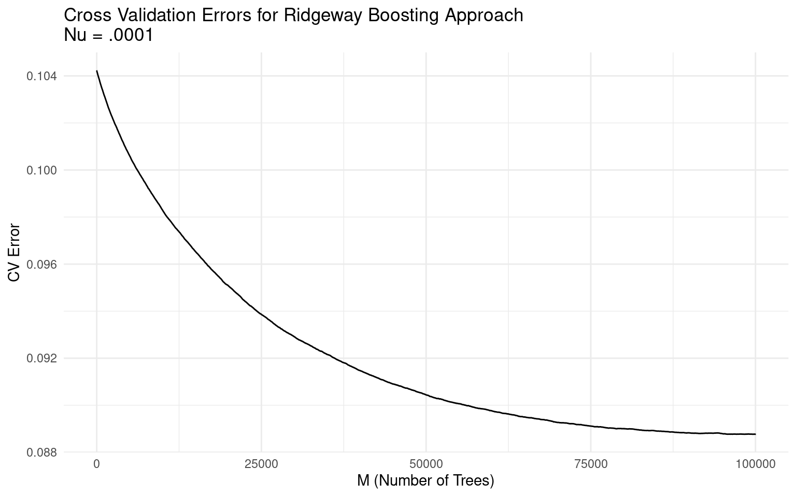
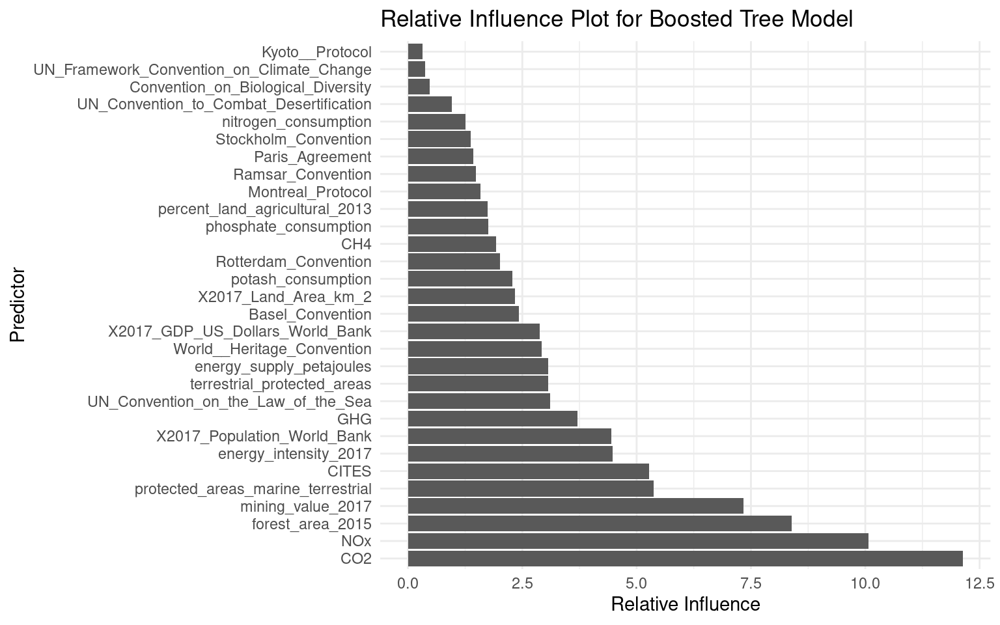
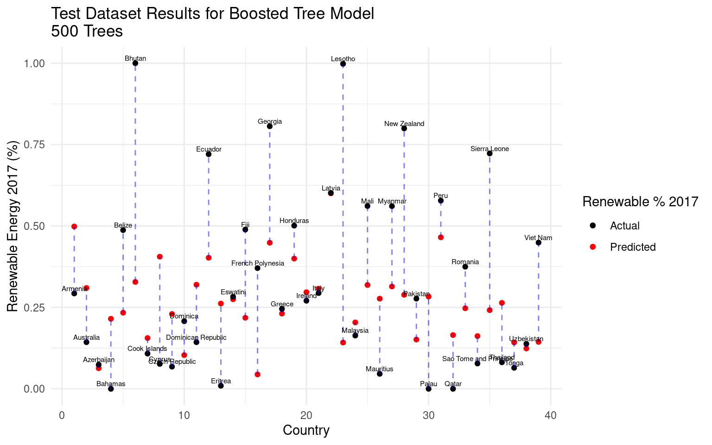

Executive Summary
Introduction
This report has been completed by Hailey Broderick and Callum Weinberg for PSTAT 131/231 in the Winter quarter of 2022 at the University of Santa Barbara. For course credit, the report has been submitted to Gauchospace, along with the structured folder which contains the raw data, additional markdown files (the necessary code is available below unless otherwise stated, but these may show some extra work), a codebook/data dictionary, data crosswalks, intermediate data files, a works cited document (called "works_cited.bib"), and the RMd file that creates this HTML file. If accessing this project via online interface, the materials can be found here: https://github.com/leoncw/PSTAT231_Final. The web hosted version of this HTML document can be found HERE (INSERT THIS).
The primary purpose of this project and the course final assignment was to take a dataset and fit models to predict values of a variable. Specifically, the prediction is perfomed on a known variable (i.e. this is a supervised learning project) and a test data set is used to evaluate the performance of the models. Performing inferential statistics on the models was not the primary purpose of this project, but is discussed at times in the report.
The structure of the report is as follows:
- Executive Summary
- Introduction
- Background
- Data: Global Environmental Indicators
- Purpose and Methods
- Coding Requirements
- Libraries
- Functions
- Data Cleaning
- Manual Crosswalks
- Loading and Combining Datasets
- Data Limitation
- Data Interpolation
- Analysis and Prediction
- Exploratory Data Analysis
- Training and Test Data
- Model 1: Regularized Linear Model
- Model 2: Regularized Generalized Linear Model (Beta Regression)
- Model 3: Principal Component Analysis and Regression
- Model 4: Random Forest Model
- Model 5: Boosted Tree Model
- Results
- Conclusion
- Findings and Evaluation of Project Goals
- Limitations and Future work
- Works Cited
Background
The makeup of energy generation is an important subject in the 21st century. As of 2020, fossil fuels are the largest categorical contributor to greenshouse gas emmisions.(Alers 2020) This in turn is a major contributor to climate change. Many countries and international organizations, such as the United Nations, are aiming to make energy generation "green", "renewable", or "clean" in order to achieve carbon neutrality.(Alers 2020) And there has been an increase in renewable energy generation in the last decade. From 2010 to 2018, 411 million people across the globe started using clean electricity.(Alers 2020)
Definitions of renewable enegry varies, though it almost always excluded fossil fuels. The United Nations Statistics Division defines renewable energy production as the following:
"Renewable electricity production refers to the proportion of total electricity produced that comes from a renewable origin. Electricity production refers to gross electricity production, which is the sum of the electrical energy production by all the generating units/installations concerned (including pumped storage) measured at the output terminals of the main generators. This includes the consumption by station auxiliaries and any losses in the transformers that are considered integral parts of the station. Renewable electricity production was calculated as the sum of electricity produced from hydro, geothermal, solar, wind, tide, wave and ocean sources. All electricity production from combustible fuels is considered non-renewable; therefore electricity produced from burning biomass or renewable waste is not included as renewable electricity in this table. However, this has been observed to be a relatively negligible proportion of electricity production in most cases."(UNSD 2020)
The above source applies to the data in this project, and therefore the scope of renewable energy in this project as is described above.
Given the importance of transitioning electricity generation to renewable, it is important to better understand what factors relate to the percentage of a countries energy generation that is composed of renewable energy.
Data: Global Environmental Indicators
The data for this report comes from the Global Environmental Dataset, currently accessible online here as a kaggle hosted data set (kaggle is an online platform for data set hosting and statistical learning competitions): https://www.kaggle.com/ruchi798/global-environmental-indicators. (Bhatia 2021). The kaggle data set is comprised of 128 files in 10 sub folders, representing different categories of the data. Each subfolder corresponds to a general area of data. Within each folder are varying numbers of .csv files with environmental indicator data for countries. For each .csv file, there is a .xslx file which generally has some description of the data in the corresponding .csv file. The indicator categories include: Air and Climate, Biodiversity, Energy and Minerals, Forests, Governance, Inland Water Resources, Land and Agriculture, Marine and Coastal Areas, Natural Disasters, and Waste. Due to time limitations for this project, the data in the Inland Water Resources category and Waste category were not considered for this project.
The .csv files are generally structured as follows: the country name and country ID are rows in the data, and various indicators and other information are in the columns. In some files the units are listed in the column titles, in others the .xlsx files contain the variable information. Some columns contain indicator information, while others are descriptive of the indicators (i.e. the year the indicator occured in, or notes on certain variables).
Missing data is a common occurance in the Global Environmental Indicators data set. Not all countries are listed in each file. In some files more than half of the countries are not listed. Even when they are listed, not all indicators are populated for a given county. Additionally, the country name and country ID are not consistant across files in the whole data set, or even the subfolders in a few cases. These issues are addressed below in the Data Cleaning section of the report.
The "Renewable elec production percentage" csv file (in the Energy and Minerals subfolder) contains the renewable energy percentage (of total energy production) by country. This is the predicted indicator for all models in this report.
While this report primarily focuses on using the Global Environmental Indicators data set, country population, size, and GDP data was also included. This data was added in order to control for potential confounding variables in model fitting. These three variables come from the World Bank "DataBank" (available at https://data.worldbank.org/indicator/).(DataBank, n.d.) The three indicator files of interest are AG.LND.TOTL.K2_DS2_en (Country land size in \(km^2\)), NY.GDP.MKTP.CD_DS2 (Country GDP US equivalent, as of 2022-02-15), andSP.POP.TOTL_DS2 (Country Population). 2017 indicators were used in the models in all three cases. When values were missing for these variables in the world bank data, Wikipedia was used to get rough approximations. This was only necessary in a few cases and generally applied to smaller island nations and French/British overseas dependencies.
Along with their online, original-source, availability, all the above listed data is available at https://github.com/leoncw/PSTAT231_Final in the "Raw_Data" folder. The World Bank variables were manually copied into the "02_final_crosswalk.csv" file
Purpose and Methods
The primary purpose of this report is to predict renewable energy percentages for countries in 2017 using Global energy indicators provided in the Global Environmental Indicators data set. This report primarily focuses on predictive statistics (although there may be some comments related to inferential statistics). The motivation is that certain environmental indicators may be able to predict the renewable energy percentage a country exhibits.
An analysis of countries as observations means that any data set with a large number of predictors will almost certainly deal with the statistical problem of \(p\) not being significantly larger than \(n\) (p being predictors, and n being number of observations). Therefore this project will focus on fitting sparsity-induding predictive models. Sparsity inducing models generally "shrink" parameters to either small values (e.g. ridge regression) or 0 (e.g. lasso regression) so that effectively, \(p\) is decreased. Such models often allow some bias to decrease the variance that would otherwise be inherent to a model with relatively large \(p\). Parametric and non-parametric models are included.
All of the selected models are supervised learning models. The models are trained on a subset of the data (called the "training set") and are validated with cross-validation (see Training and Test Data section for further discussion), with one exception (see Model 2). The predictive power of the models is measured using a test training set. The model error is the primary metric for measuring the success of prediction. Error is generally measured using a loss function. Renewable energy percentage is a continuous, numeric, variable bounded by 0 and 1. Therefore the two loss functions used are based on absolute loss and quadratic loss.
The following applies for reported renewable energy percentage \(y_i\) (for country \(i\)) and renewable energy percentage \(\hat{y_i}\). Mean Absolute Error (MAE), which is a form of absolute loss, is defined as:
\[MAE = \frac{\sum_{i = 1}^{n}|\hat{y_i}-y_i|}{n}\]
Root Mean Square Error (RMSE), which is a form of quadratic loss, is defined as:
\[RMSE = \sqrt{\frac{\sum_{i = 1}^{n}(\hat{y_i}-y_i)^2}{n}}\]
RMSE is the most commonly used metric in comparing the relative accuracy of predictive models. However, MAE has a very nice interpreation in this project. Since percentages are bounded by 0 and 1, the MAE is easily interpreted as the average percentage miss in either direction for the set of predictions. So if the \(MAE = .10\) for a model and a specific test data set, then the predictions on average were .1% away from the true percentages. RMSE and MAE are typically measured on the test data (or validation data), i.e. \(y_i \in \{y_{test}\}\)
[BLURB ABOUT MAE]
Finally, the Bias of the model is considerd. Bias is defined as:
\[Bias = \frac{\sum_{i = 1}^{n}\hat{y_i}-y_i}{n}\] Unlike MAE and RMSE, bias is measured using the training data, i.e. \(y_i \in \{y_{train}\}\). Effectively, it measures how close the predicted values are on average to the values used to fit them. By effectively having a large number of predictors (e.g. \(n\) fitting polynomial terms in a Generalized Additive Model), it is often possible to get the bias close to 0. This generally indicates the model is overfitted, and will perform poorly on test data. Low bias usually comes at the cost of high variance in the prediction. Bias is measured in this report to provide warning of overfitting. It may not be directly comparable between models, as some models tend to have lower bias but still may perform better.
Coding Requirments
Libraries
The following libraries are needed to run the code throughout this report. They should be installed on a machine using the "install.packages()" function in R before loading.
library(knitr)
library(plyr)
library(dplyr)
library(tidyr)
library(assertr)
library(ggplot2)
library(reshape2)
library(bamlss)
library(cowplot)
library(glmnet)
library(gbm)
library(tibble)
library(forcats)
library(rmdformats) # Using developmental versionFunctions
Below are a series of functions (not from libraries) used in different places throughout the report. They are written by the authors unless otherwise specified.
The below function checks for missing values in a data frame or matrix.
# From https://cran.r-project.org/web/packages/assertr/vignettes/assertr.html
not.missing.p = function(x){
if(is.na(x)) return(FALSE)
}The below function replaces missing values in a matrix with the median of the column.
# Define Median Replacement function (for a matrix)
# Used for data interpolation
median_replace = function(x) {
for(i in 1:ncol(x)) {
# Note: this will break if an entire column is missing values
x[which(is.na(x[,i])),i] = median(x[,i],na.rm=TRUE)
}
return(x)
}The below function creates a quantile-quantile plot using ggplo2 library.
#Function for QQ Plot in GGPLOT
# Source: https://stackoverflow.com/questions/4357031/qqnorm-and-qqline-in-ggplot2
qqplot_residuals <- function (vec) # argument: vector of numbers
{
# following four lines from base R's qqline()
y <- quantile(vec[!is.na(vec)], c(0.25, 0.75))
x <- qnorm(c(0.25, 0.75))
slope <- diff(y)/diff(x)
int <- y[1L] - slope * x[1L]
d <- data.frame(resids = vec)
ggplot(d, aes(sample = resids)) +
stat_qq(color = "blue", alpha = .2) +
geom_abline(slope = slope, intercept = int) +
theme(plot.title = element_text(hjust = 0.5)) +
theme_minimal()
}Data Cleaning
Manual Crosswalks
As mentioned above, within each folder from the Kaggle dataset, the differnt CSV files sometimes had the countries indexed to different values. In other words, there was not a unique identifier between the different CSV files for the Energy and Mineral folder and the Land and Agrigulture folder. In order to combine (merge) these datasets, manual "crosswalks" had to be compiled, with a new identifier variable generated. These crosswalk files are available in the "Crosswalks" folder in the both the submission (note this applies to the submission for PSTAT 231) and the hosted github page (see introduction).
Additionally, there is a "final crosswalk" which maps the different subfolders (after the CSV from each sub folder has been combined) together is loaded.
## Energy and Minerals Crosswalk
energy_minerals_crosswalk_manual = read.csv("Crosswalks/Energy_Minerals_Crosswalk.csv")
energy_minerals_crosswalk_mineral_manual = read.csv("Crosswalks/Energy_Minerals_Crosswalk_mineral_dataset.csv")
## Land and Agriculture Crosswalks
land_agriculture_preliminary_manual = read.csv("Crosswalks/land_agricultural_preliminary.csv")
land_agriculture_final_manual = read.csv("Crosswalks/land_agricultural_final.csv")
## Final Crosswalk for Mapping Categories
## Includes World Bank Data
final_crosswalk = read.csv("Crosswalks/02_final_crosswalk.csv")
final_crosswalk = final_crosswalk %>%
rename(Country = Country_Mapping)
# Get version with only Country and ID
final_crosswalk_Country_Only = final_crosswalk %>%
select(Country, Country_ID_Final)Loading and Combing CSVs from Subfolders
The CSVs from each subfolder are loaded and cleaned. Cleaning in this case refers to keeping variables of interest, renaming variables, dropping empty rows, and checking that Country and Country ID are unique. For the folders that do have a unique country identifier for all CSVs in the folder, a crosswalk is generated in R and the CSVs are merged using that. Versions of the merged data are saved to the "intermediate" folder - this was done mainly to create the "final crosswalk" and is not strictly necessary if this code is being rerun.
The world bank data variables are included in the final crosswalk: they were manually entered into the CSV.
Air and Climate Code:
## CH_4 Emissions
CH4_emissions = read.csv("Raw_Data/Air and Climate/CH4_Emissions.csv")
CH4_emissions = CH4_emissions %>%
rename(Country_ID = Country.ID,
CH4_latest_year = X.28,
CH4 = CH4.emissions..latest.year,
CH4_change_1990 = X..change.since.1990,
CH4_per_capita = CH4.emissions..per.capita...latest.year) %>%
select(Country_ID,Country,CH4_latest_year,CH4,CH4_change_1990,CH4_per_capita) %>%
slice(2:190) %>%
assert(not.missing.p, Country_ID)
## CO2 Emissions
CO2_emissions = read.csv("Raw_Data/Air and Climate/CO2_Emissions.csv")
CO2_emissions = CO2_emissions %>%
rename(Country_ID = Country.ID,
CO2_latest_year = X.28,
CO2 = CO2.emissions..latest.year,
CO2_change_1990 = X..change.since.1990,
CO2_per_capita = CO2.emissions..per.capita...latest.year) %>%
select(Country_ID,Country,CO2_latest_year,CO2,CO2_change_1990,CO2_per_capita) %>%
slice(2:191) %>%
assert(not.missing.p, Country_ID)
## GHG Emissions
GHG_emissions = read.csv("Raw_Data/Air and Climate/GHG_Emissions.csv")
GHG_emissions = GHG_emissions %>%
rename(Country_ID = Country.ID,
GHG_latest_year = X.28,
GHG = GHG.total.without.LULUCF..latest.year,
GHG_change_1990 = X..change.since.1990,
GHG_per_capita = GHG.emissions.per.capita...latest.year) %>%
select(Country_ID,Country,GHG_latest_year,GHG,GHG_change_1990,GHG_per_capita) %>%
slice(2:192) %>%
assert(not.missing.p, Country_ID)
## GHG Emissions
GHG_emissions = read.csv("Raw_Data/Air and Climate/GHG_Emissions.csv")
# GHG_sector_total should be the same as GHG, if not investigate
GHG_emissions = GHG_emissions %>%
rename(Country_ID = Country.ID,
GHG_latest_year = X.28,
GHG = GHG.total.without.LULUCF..latest.year,
GHG_change_1990 = X..change.since.1990,
GHG_per_capita = GHG.emissions.per.capita...latest.year) %>%
select(Country_ID,Country,GHG_latest_year,GHG,GHG_change_1990,GHG_per_capita) %>%
slice(2:192) %>%
assert(not.missing.p, Country_ID)
## GHG Emissions by Sector
# Add this in
# GHG_emissions_by_sector = read.csv("Data/Air and Climate/GHG_Emissions_by_Sector.csv")
# GHG_sector_total should be the same as GHG, if not investigate
## N2O Emissions
N2O_emissions = read.csv("Raw_Data/Air and Climate/N2O_Emissions.csv")
N2O_emissions = N2O_emissions %>%
rename(Country_ID = Country.ID,
N2O_latest_year = X.28,
N2O = N2O.emissions..latest.year,
N2O_change_1990 = X..change.since.1990,
N2O_per_capita = N2O.emissions..per.capita...latest.year) %>%
select(Country_ID,Country,N2O_latest_year,N2O,N2O_change_1990,N2O_per_capita) %>%
slice(2:189) %>%
assert(not.missing.p, Country_ID)
## NOx Emissions
# There are some blank lines in this
# file that need to be skipped
NOx_emissions = read.csv("Raw_Data/Air and Climate/NOx_Emissions.csv")
NOx_emissions = NOx_emissions %>%
rename(Country_ID = Country.ID,
NOx_latest_year = X.28,
NOx = NOx.emissions..latest.year,
NOx_change_1990 = X..change.since.1990,
NOx_per_capita = NOx..emissions.per.capita...latest.year) %>%
select(Country_ID,Country,NOx_latest_year,NOx,NOx_change_1990,NOx_per_capita) %>%
slice(2:173) %>%
assert(not.missing.p, Country_ID)
## SO2 Emissions
SO2_emissions = read.csv("Raw_Data/Air and Climate/SO2_emissions.csv")
SO2_emissions = SO2_emissions %>%
rename(Country_ID = Country.ID,
SO2_latest_year = X.28,
SO2 = SO2.emissions..latest.year,
SO2_change_1990 = X..change.since.1990,
SO2_per_capita = SO2.emissions.per.capita..latest.year) %>%
select(Country_ID,Country,SO2_latest_year,SO2,SO2_change_1990,SO2_per_capita) %>%
slice(2:143) %>%
assert(not.missing.p, Country_ID)
# Append all of the Datasets
crosswalk_air_climate = rbind.fill(CH4_emissions,
CO2_emissions,
GHG_emissions,
N2O_emissions,
NOx_emissions,
SO2_emissions)
# Create the Crosswalk
crosswalk_air_climate = crosswalk_air_climate %>%
select(Country_ID, Country) %>%
distinct()
# Check if there are any Duplicates
# This would mean that for the air and climate datasets
# there are either repeated countries, IDs, or that
# ID is not unique to country between the datasets
# and Vice versa
dim(crosswalk_air_climate[duplicated(crosswalk_air_climate$Country_ID),])[1] == 0
dim(crosswalk_air_climate[duplicated(crosswalk_air_climate$Country),])[1] == 0
# COmbine the datasets
# Start with the Above Created Crosswalk
# And Merge on Each of the Datasets
combined_air_climate =
left_join(crosswalk_air_climate,CH4_emissions, by = "Country_ID") %>%
select(-Country.y) %>%
rename(Country = Country.x)
combined_air_climate =
left_join(combined_air_climate,CO2_emissions, by = "Country_ID") %>%
select(-Country.y) %>%
rename(Country = Country.x)
combined_air_climate =
left_join(combined_air_climate,GHG_emissions, by = "Country_ID") %>%
select(-Country.y) %>%
rename(Country = Country.x)
combined_air_climate =
left_join(combined_air_climate,N2O_emissions, by = "Country_ID") %>%
select(-Country.y) %>%
rename(Country = Country.x)
combined_air_climate =
left_join(combined_air_climate,NOx_emissions, by = "Country_ID") %>%
select(-Country.y) %>%
rename(Country = Country.x)
combined_air_climate =
left_join(combined_air_climate,SO2_emissions, by = "Country_ID") %>%
select(-Country.y) %>%
rename(Country = Country.x)
# Export Data
save(combined_air_climate, file="Intermediate_Data/001_combined_air_climate.Rdata")
write.csv(combined_air_climate,"Intermediate_Data/001_combined_air_climate.csv", row.names = FALSE)
# Merge in Final Crosswalk to Get Universal ID
combined_air_climate_clean =
left_join(final_crosswalk_Country_Only,combined_air_climate, by = "Country") %>%
filter(!is.na(Country_ID)) %>%
select(-Country, -Country_ID) %>%
filter(Country_ID_Final != 999) #Excluded before merging
# Clean Up Environment
remove(crosswalk_air_climate,combined_air_climate, CH4_emissions, CO2_emissions,
GHG_emissions,N2O_emissions, NOx_emissions, SO2_emissions)Energy and Minerals Code:
## Renewable Percentage
# Current problem is to model 2017 renewable energy
# so only keeping 2017 variable in this iteration
# Also there are some empty rows and the end of the
# data set
renewable_percentage = read.csv("Raw_Data/Energy and Minerals/Renewable elec production percentage.csv")
renewable_percentage = renewable_percentage %>%
rename(Country_ID = CountryID,
Country = Country.and.area,
renewable_percent_2017 = X2017) %>%
select(Country_ID,renewable_percent_2017) %>%
slice(1:224) %>%
assert(not.missing.p, Country_ID) %>%
left_join(energy_minerals_crosswalk_manual, by = "Country_ID")
## Energy Indicators
# YEAR NOT INDICATED
energy_indicators = read.csv("Raw_Data/Energy and Minerals/Energy Indicators.csv")
energy_indicators = energy_indicators %>%
rename(Country_ID = CountryID,
Country = Country.and.area,
energy_supply_petajoules = Energy.supply..petajoules.,
energy_supply_per_capita_gigajoules = Energy.supply..per.capita...gigajoules.per.capita.,
contribution_renewable_to_electric_production = Conribution.of.renewables.to.electricity.production....) %>%
select(Country_ID,energy_supply_petajoules,
energy_supply_per_capita_gigajoules,
contribution_renewable_to_electric_production) %>%
slice(1:217) %>%
assert(not.missing.p, Country_ID) %>%
left_join(energy_minerals_crosswalk_manual, by = "Country_ID")
## Energy Intensity
energy_intensity = read.csv("Raw_Data/Energy and Minerals/Energy intensity measured in terms of primary energy and GDP.csv")
energy_intensity = energy_intensity %>%
rename(Country_ID = CountryID,
Country = Country.and.area,
energy_intensity_2017 = X2017) %>%
select(Country_ID, energy_intensity_2017) %>%
assert(not.missing.p, Country_ID) %>%
left_join(energy_minerals_crosswalk_manual, by = "Country_ID")
## Energy Supply Per Capita
energy_supply_per_capita = read.csv("Raw_Data/Energy and Minerals/Energy supply per capita.csv")
energy_supply_per_capita = energy_supply_per_capita %>%
rename(Country_ID = CountryID,
Country = Country.and.area,
energy_supply_per_capita_2017 = X2017) %>%
select(Country_ID,energy_supply_per_capita_2017) %>%
slice(1:222) %>%
assert(not.missing.p, Country_ID) %>%
left_join(energy_minerals_crosswalk_manual, by = "Country_ID")
## Energy Supply
energy_supply = read.csv("Raw_Data/Energy and Minerals/Energy supply.csv")
energy_supply = energy_supply %>%
rename(Country_ID = CountryID,
Country = Country.and.area,
energy_supply_2017 = X2017) %>%
select(Country_ID,energy_supply_2017) %>%
slice(1:222) %>%
assert(not.missing.p, Country_ID) %>%
left_join(energy_minerals_crosswalk_manual, by = "Country_ID")
## Contribution of Mining to Value Added
# Only keeping 2017
# Missing ID: will need to fix this
mining_percentage = read.csv("Raw_Data/Energy and Minerals/Contribution of mining to value added.csv")
mining_percentage = mining_percentage %>%
rename(Country = Country.and.area,
mining_value_2017 = X2017) %>%
select(Country,mining_value_2017) %>%
assert(not.missing.p, Country) %>%
left_join(energy_minerals_crosswalk_mineral_manual,
by = c("Country" = "Country_Corrected")) %>% # Correct Missing ID
select(-Country) %>%
left_join(energy_minerals_crosswalk_manual, by = "Country_ID")
# Append all of the Datasets
crosswalk_energy_minerals = rbind.fill(renewable_percentage,
energy_indicators,
energy_intensity,
energy_supply_per_capita,
energy_supply,
mining_percentage)
# Create the Crosswalk
crosswalk_energy_minerals = crosswalk_energy_minerals %>%
select(Country_ID, Country) %>%
distinct()
#write.csv(crosswalk_energy_minerals,"Crosswalks/Base_Energy_Minerals_Crosswalk.csv", row.names = FALSE)
# Check if there are any Duplicates
# This would mean that for the energy and minerals datasets
# there are either repeated countries, IDs, or that
# ID is not unique to country between the datasets
# and Vice versa
dim(crosswalk_energy_minerals[duplicated(crosswalk_energy_minerals$Country_ID),])[1] == 0
dim(crosswalk_energy_minerals[duplicated(crosswalk_energy_minerals$Country_Corrected),])[1] == 0
# Combine the CSVs
# Start with the Above Created Crosswalk
# And Merge on Each of the Datasets
combined_energy_minerals =
left_join(crosswalk_energy_minerals,renewable_percentage, by = "Country_ID") %>%
select(-Country.y) %>%
rename(Country = Country.x)
combined_energy_minerals =
left_join(combined_energy_minerals,energy_indicators, by = "Country_ID") %>%
select(-Country.y) %>%
rename(Country = Country.x)
combined_energy_minerals =
left_join(combined_energy_minerals,energy_intensity, by = "Country_ID") %>%
select(-Country.y) %>%
rename(Country = Country.x)
combined_energy_minerals =
left_join(combined_energy_minerals,energy_supply_per_capita, by = "Country_ID") %>%
select(-Country.y) %>%
rename(Country = Country.x)
combined_energy_minerals =
left_join(combined_energy_minerals,energy_supply, by = "Country_ID") %>%
select(-Country.y) %>%
rename(Country = Country.x)
combined_energy_minerals =
left_join(combined_energy_minerals,mining_percentage, by = "Country_ID") %>%
select(-Country.y) %>%
rename(Country = Country.x)
# Export Data
save(combined_energy_minerals, file="Intermediate_Data/002_combined_energy_minerals.Rdata")
write.csv(combined_energy_minerals,"Intermediate_Data/002_combined_energy_minerals.csv", row.names = FALSE)
# Merge in Final Crosswalk to Get Universal ID
combined_energy_minerals_clean =
left_join(final_crosswalk_Country_Only,combined_energy_minerals, by = "Country") %>%
filter(!is.na(Country_ID)) %>%
select(-Country, -Country_ID) %>%
filter(Country_ID_Final != 999) #Excluded before merging
# Clean Up Environment
remove(crosswalk_energy_minerals,combined_energy_minerals,renewable_percentage, energy_indicators,
energy_intensity,energy_supply_per_capita,energy_supply, mining_percentage,energy_minerals_crosswalk_manual,
energy_minerals_crosswalk_mineral_manual)Land and Agriculture Code
## Agricultural Land
agriculture_land = read.csv("Raw_Data/Land and Agriculture/Agricultural Land.csv")
# not including change in cultural land since 1990
# missing a good amount. Also not including
# agricultural land actually irrigated, also
# missing a lot
agriculture_land = agriculture_land %>%
rename(Country = Country,
agricultural_area_2013 = Agricultural.area.in.2013..km2.,
percent_land_agricultural_2013 = X..of.total.land.area.covered.by.agricultural.area.in.2013,
arable_land_2013 = Arable.land.in.2013..km2.,
permanent_crops_2013 = Permanent.crops.in.2013..km2.,
permanent_meadows_pastures_2013 = Permanent.meadows.and.pastures.in.2013..km2.) %>%
select(Country,agricultural_area_2013,percent_land_agricultural_2013,arable_land_2013,
permanent_crops_2013,permanent_meadows_pastures_2013) %>%
assert(not.missing.p, Country) %>% # ID missing
left_join(land_agriculture_preliminary_manual, by = "Country") %>%
assert(not.missing.p, Country_ID) %>%
select(-Country) %>%
left_join(land_agriculture_final_manual, by = "Country_ID")
## Consumption of Fertilizers Per Unit of
## Agricultural Land
consumption_fertilizer = read.csv("Raw_Data/Land and Agriculture/Consumption of fertilizers per unit of agricultural land area.csv")
consumption_fertilizer = consumption_fertilizer %>%
rename(Country = Country,
nitrogen_consumption = Nitrogen,
phosphate_consumption = Phosphate,
potash_consumption = Potash) %>%
select(Country,nitrogen_consumption,phosphate_consumption,potash_consumption) %>%
assert(not.missing.p, Country) %>% # ID missing
left_join(land_agriculture_preliminary_manual, by = "Country") %>%
assert(not.missing.p, Country_ID) %>%
select(-Country) %>%
left_join(land_agriculture_final_manual, by = "Country_ID")
## Terrestrial Protected Areas
# All 2018
terrestrial_protected_areas = read.csv("Raw_Data/Land and Agriculture/Terrestrial protected areas.csv")
terrestrial_protected_areas = terrestrial_protected_areas %>%
rename(Country_ID = CountryID,
Country = Country.and.area,
terrestrial_protected_areas = Terrestrial.protected.areas) %>%
select(Country_ID,Country,terrestrial_protected_areas) %>%
slice(3:213) %>%
assert(not.missing.p, Country_ID) %>%
select(-Country) %>%
left_join(land_agriculture_final_manual, by = "Country_ID")
# Append all of the Datasets
crosswalk_land_agricultural = rbind.fill(agriculture_land,
consumption_fertilizer,
terrestrial_protected_areas)
# Create the Crosswalk
crosswalk_land_agricultural = crosswalk_land_agricultural %>%
select(Country_ID, Country) %>%
distinct()
# Check if there are any Duplicates
# This would mean that for the energy and minerals datasets
# there are either repeated countries, IDs, or that
# ID is not unique to country between the datasets
# and Vice versa
dim(crosswalk_land_agricultural[duplicated(crosswalk_land_agricultural$Country_ID),])[1] == 0
dim(crosswalk_land_agricultural[duplicated(crosswalk_land_agricultural$Country_Corrected),])[1] == 0
# Combine the CSVs
# Start with the Above Created Crosswalk
# And Merge on Each of the Datasets
combined_land_agricultural =
left_join(crosswalk_land_agricultural,agriculture_land, by = "Country_ID") %>%
select(-Country.y) %>%
rename(Country = Country.x)
combined_land_agricultural =
left_join(combined_land_agricultural,consumption_fertilizer, by = "Country_ID") %>%
select(-Country.y) %>%
rename(Country = Country.x)
combined_land_agricultural =
left_join(combined_land_agricultural,terrestrial_protected_areas, by = "Country_ID") %>%
select(-Country.y) %>%
rename(Country = Country.x)
# Export Data
save(combined_land_agricultural, file="Intermediate_Data/003_combined_land_agricultural.Rdata")
write.csv(combined_land_agricultural,"Intermediate_Data/003_combined_land_agricultural.csv", row.names = FALSE)
# Merge in Final Crosswalk to Get Universal ID
combined_land_agricultural_clean =
left_join(final_crosswalk_Country_Only,combined_land_agricultural, by = "Country") %>%
filter(!is.na(Country_ID)) %>%
select(-Country, -Country_ID) %>%
filter(Country_ID_Final != 999) #Excluded before merging
# Clean Up Environment
remove(crosswalk_land_agricultural,combined_land_agricultural,agriculture_land,
consumption_fertilizer,terrestrial_protected_areas, land_agriculture_preliminary_manual,
land_agriculture_final_manual)Natural Disaster Code
## climatological disasters
climatological_disasters = read.csv("Raw_Data/Natural Disasters/Climatological disasters.csv")
climatological_disasters = climatological_disasters %>%
rename(Country_ID = CountryID,
Country = Countries.or.areas,
climate_disaster_occurence_2010_2019 = Occurrence.2010.2019,
climate_disaster_deaths_2010_2019 = Total.deaths.2010.2019,
climate_disaster_affected_2010_2019 = Persons.affected.2010.2019) %>%
select(Country_ID,Country,climate_disaster_occurence_2010_2019,
climate_disaster_deaths_2010_2019,
climate_disaster_affected_2010_2019) %>%
assert(not.missing.p, Country_ID)
## geophysical disasters
geophysical_disasters = read.csv("Raw_Data/Natural Disasters/Geophysical disasters.csv")
geophysical_disasters = geophysical_disasters %>%
rename(Country_ID = CountryID,
Country = Countries.or.areas,
geophysical_disaster_occurence_2010_2019 = Occurrence.2010.2019,
geophysical_disaster_deaths_2010_2019 = Total.deaths.2010.2019,
geophysical_disaster_affected_2010_2019 = Persons.affected.2010.2019) %>%
select(Country_ID,Country,geophysical_disaster_occurence_2010_2019,
geophysical_disaster_deaths_2010_2019,
geophysical_disaster_affected_2010_2019) %>%
assert(not.missing.p, Country_ID)
## hydrological disasters
hydrological_disasters = read.csv("Raw_Data/Natural Disasters/Hydrological disasters.csv")
hydrological_disasters = hydrological_disasters %>%
rename(Country_ID = CountryID,
Country = Countries.or.areas,
hydrological_disaster_occurence_2010_2019 = Occurrence.2010.2019,
hydrological_disaster_deaths_2010_2019 = Total.deaths.2010.2019,
hydrological_disaster_affected_2010_2019 = Persons.affected.2010.2019) %>%
select(Country_ID,Country,hydrological_disaster_occurence_2010_2019,
hydrological_disaster_deaths_2010_2019,
hydrological_disaster_affected_2010_2019) %>%
assert(not.missing.p, Country_ID)
## meteorological disasters
meteorological_disasters = read.csv("Raw_Data/Natural Disasters/Meteorological disasters.csv")
meteorological_disasters = meteorological_disasters %>%
rename(Country_ID = CountryID,
Country = Countries.or.areas,
meteorological_disaster_occurence_2010_2019 = Occurrence.2010.2019,
meteorological_disaster_deaths_2010_2019 = Total.deaths.2010.2019,
meteorological_disaster_affected_2010_2019 = Persons.affected.2010.2019) %>%
select(Country_ID,Country,meteorological_disaster_occurence_2010_2019,
meteorological_disaster_deaths_2010_2019,
meteorological_disaster_affected_2010_2019) %>%
assert(not.missing.p, Country_ID)
# Append all of the Datasets
crosswalk_natural_disaster = rbind.fill(climatological_disasters,
geophysical_disasters,
hydrological_disasters,
meteorological_disasters)
# Create the Crosswalk
crosswalk_natural_disaster = crosswalk_natural_disaster %>%
select(Country_ID, Country) %>%
distinct()
# Check if there are any Duplicates
# This would mean that for the energy and minerals datasets
# there are either repeated countries, IDs, or that
# ID is not unique to country between the datasets
# and Vice versa
dim(crosswalk_natural_disaster[duplicated(crosswalk_natural_disaster$Country_ID),])[1] == 0
dim(crosswalk_natural_disaster[duplicated(crosswalk_natural_disaster$Country_Corrected),])[1] == 0
# Combine CSVs
# Start with the Above Created Crosswalk
# And Merge on Each of the Datasets
combined_natural_disaster =
left_join(crosswalk_natural_disaster,climatological_disasters, by = "Country_ID") %>%
select(-Country.y) %>%
rename(Country = Country.x)
combined_natural_disaster =
left_join(combined_natural_disaster,geophysical_disasters, by = "Country_ID") %>%
select(-Country.y) %>%
rename(Country = Country.x)
combined_natural_disaster =
left_join(combined_natural_disaster,hydrological_disasters, by = "Country_ID") %>%
select(-Country.y) %>%
rename(Country = Country.x)
combined_natural_disaster =
left_join(combined_natural_disaster,meteorological_disasters, by = "Country_ID") %>%
select(-Country.y) %>%
rename(Country = Country.x)
# Export Data
save(combined_natural_disaster, file="Intermediate_Data/004_combined_natural_disaster.Rdata")
write.csv(combined_natural_disaster,"Intermediate_Data/004_combined_natural_disaster.csv", row.names = FALSE)
# Merge in Final Crosswalk to Get Universal ID
combined_natural_disaster_clean =
left_join(final_crosswalk_Country_Only,combined_natural_disaster, by = "Country") %>%
filter(!is.na(Country_ID)) %>%
select(-Country, -Country_ID) %>%
filter(Country_ID_Final != 999) #Excluded before merging
# Clean Up Environment
remove(crosswalk_natural_disaster,combined_natural_disaster,climatological_disasters,
geophysical_disasters,hydrological_disasters, meteorological_disasters)Other Categories Code:
## Biodiversity Data/Marine and Terrestrial Protected areas
# row 1 is world total
protected_areas_marine_terrestrial = read.csv("Raw_Data/Biodiversity/Terrestrial_Marine protected areas.csv")
protected_areas_marine_terrestrial =
protected_areas_marine_terrestrial %>%
rename(Country_ID = CountryID,
Country = Country.and.area,
protected_areas_marine_terrestrial_latest_year = latest.year.available,
protected_areas_marine_terrestrial = Terrestrial.and.marine.protected.areas....of.total.territorial.area.) %>%
slice(2:211) %>%
assert(not.missing.p, Country_ID)
## Marine and Coastal Protected areas
# first row is world total
protected_areas_marine_coastal = read.csv("Raw_Data/Marine and Coastal Areas/Marine protected areas.csv")
protected_areas_marine_coastal =
protected_areas_marine_coastal %>%
rename(Country_ID = CountryID,
Country = Country.and.area,
protected_areas_marine_latest_year = latest.year.available,
protected_areas_marine = Marine.protected.areas....of.territorial.waters.) %>%
slice(2:217) %>%
assert(not.missing.p, Country_ID)
## Forests Data
# deforestaion and fire areas not included due to
# significant number of missing values
# row 1 is world total
forest_areas = read.csv("Raw_Data/Forests/Forest Area.csv")
forest_areas =
forest_areas %>%
rename(Country_ID = CountryID,
Country = Country.and.Area,
forest_area_2015 = Forest.Area..2015..1000.ha.,
forest_area_2020 = Forest.Area..2020..1000.ha.,
forest_total_land_area_2020 = Total.Land.Area..2020..1000.ha.) %>%
select(Country_ID,Country,forest_area_2015,forest_area_2020,forest_total_land_area_2020) %>%
slice(2:237) %>%
assert(not.missing.p, Country_ID)
## Governance
governance = read.csv("Raw_Data/Governance/Governance.csv")
governance = governance %>%
rename(Country_ID = CountryID,
Country = Country.and.area) %>%
rename_with(~gsub(".", "_", .x, fixed = TRUE)) %>%
assert(not.missing.p, Country_ID)
# Append all of the Datasets
crosswalk_other = rbind.fill(protected_areas_marine_terrestrial,
protected_areas_marine_coastal,
forest_areas,
governance)
# Create the Crosswalk
crosswalk_other = crosswalk_other %>%
select(Country_ID, Country) %>%
distinct()
# Check if there are any Duplicates
# This would mean that for the air and climate datasets
# there are either repeated countries, IDs, or that
# ID is not unique to country between the datasets
# and Vice versa
dim(crosswalk_other[duplicated(crosswalk_other$Country_ID),])[1] == 0
dim(crosswalk_other[duplicated(crosswalk_other$Country),])[1] == 0
# Combine CSVs
# Start with the Above Created Crosswalk
# And Merge on Each of the Datasets
combined_other =
left_join(crosswalk_other,protected_areas_marine_terrestrial, by = "Country_ID") %>%
select(-Country.y) %>%
rename(Country = Country.x)
combined_other =
left_join(combined_other,protected_areas_marine_coastal, by = "Country_ID") %>%
select(-Country.y) %>%
rename(Country = Country.x)
combined_other =
left_join(combined_other,forest_areas, by = "Country_ID") %>%
select(-Country.y) %>%
rename(Country = Country.x)
combined_other =
left_join(combined_other,governance, by = "Country_ID") %>%
select(-Country.y) %>%
rename(Country = Country.x)
# Export Data
save(combined_other, file="Intermediate_Data/005_combined_other.Rdata")
write.csv(combined_other,"Intermediate_Data/005_combined_other.csv", row.names = FALSE)
# Merge in Final Crosswalk to Get Universal ID
combined_other_clean =
left_join(final_crosswalk_Country_Only,combined_other, by = "Country") %>%
filter(!is.na(Country_ID)) %>%
select(-Country, -Country_ID) %>%
filter(Country_ID_Final != 999) #Excluded before merging
# Clean Up Environment
remove(crosswalk_other,combined_other,protected_areas_marine_terrestrial,
protected_areas_marine_coastal,forest_areas, governance)Combine all Categories Code:
# Create Clea Final Data and World Bank Dataset
full_data = final_crosswalk %>%
filter(Country_ID_Final != 999) %>%
filter(Country_Final != "Swaziland") %>%
filter(Country_Final != "Czechia") %>%
filter(Country_Final != "St. Helena") %>%
filter(Country_Final != "St. Pierre-Miquelon") %>%
select(-Country) %>%
distinct()
# Check if there are any Duplicates
# This would mean that for the air and climate datasets
# there are either repeated countries, IDs, or that
# ID is not unique to country between the datasets
# and Vice versa
dim(full_data[duplicated(full_data$Country_ID_Final),])[1] == 0
dim(full_data[duplicated(full_data$Country_Final),])[1] == 0
# Create Full Dataset (Excluding 999 Countries)
full_data = left_join(full_data,combined_air_climate_clean, by = "Country_ID_Final")
full_data = left_join(full_data,combined_energy_minerals_clean, by = "Country_ID_Final")
full_data = left_join(full_data,combined_land_agricultural_clean, by = "Country_ID_Final")
full_data = left_join(full_data,combined_natural_disaster_clean, by = "Country_ID_Final")
full_data = left_join(full_data,combined_other_clean, by = "Country_ID_Final")
# Save the Data for Use in the Next File
save(full_data, file="Intermediate_Data/01_full_data.Rdata")
remove(combined_air_climate_clean,combined_energy_minerals_clean,combined_land_agricultural_clean,
combined_natural_disaster_clean,combined_other_clean,final_crosswalk,final_crosswalk_Country_Only)Limiting the Data
The following code limits the observations and variables based on a number of practical criteria. First, any missing values are replaced with NAs. Non-numeric data is converted to numeric (except for country names). Variables that were originally included from the CSVs as "Notes" are excluded. Additionally, the renewable percentage for 2017 is converted to a percentage (the data is a percentage from the source, not a decimal).
[NOTE NUMBER OF ROWS AND COLUMNS DROPPED]
## Load the Data from the 01 File
load(file="Intermediate_Data/01_full_data.Rdata")
## Rename Data
full_data_clean = full_data
remove(full_data)
# Convert ... to NA
full_data_clean = full_data_clean %>%
mutate(across(.cols = everything(), ~ifelse(.x == "...", NA, .x)))
# Remove Note Columns
full_data_clean = full_data_clean %>%
select(-World_Bank_Notes,-Other_Notes)
# Convert Variables to Numeric
# Everything besides Country and Country ID should be numeric
#full_data_clean = full_data_clean %>%
# mutate(across(.cols = everything(), ~ifelse(is.character(.x) == TRUE, as.numeric(.x), .x)))
j = ncol(full_data_clean)
i = c(2:j)
full_data_clean[ , i] = apply(full_data_clean[ , i], 2, function(x) as.numeric(x))
# Convert Renewable Percentage 2017 to an Actual Percentage
full_data_clean$renewable_percent_2017 =
full_data_clean$renewable_percent_2017/100Any observations (countries) that don't have percent renewable for 2017 are excluded, since that is what predicted, and there is no reasonable way to interpolate the "solution." 19 countries do not have 2017 renewable percentage.
## Drop Observations that don't have Renewable Energy Percentage for 2019
# There are 19 Such observations
full_data_clean = full_data_clean %>%
filter(is.na(renewable_percent_2017) == FALSE)Some of the variables and countries are missing a lot of values: more than is reasonable to interpolate. The selected threshold is if the country is missing more than 50 values. This was chosen after reviewing the dataset, and weighs the importance of retaining data (and not biasing the model too much by removing countries) with the practical consideration that fitting a model for an observation that is over mostly interpolated for its predictors is not particularly useful or intersting and makes modeling more dificult.
## Get a count of the number of missings, and remove Countries
# that have 50 or more missing values. See write up for list of
# countries
full_data_row_remove = full_data_clean %>%
mutate(row_missings = rowSums(is.na(full_data_clean))) %>%
filter(row_missings < 50)After removing the observations (countries) without much data, a similar process is applied to columns (predictors). Similar logic applies as above. Variables that are mostly missing will be mostly imputed, reducing the value of the process.
Per capita variables are not included when the raw total is available (since models will be able to include population). Year variables are not included in modeling, but are available for data tracking in "01_full_data.Rdata". Variables are removed "manually" in this step by inspecting the list of variables and number of missings
# Below is a list of the number of missing values per column.
# Using this list to determine what variables to keep for the final models
# Uncomment the below code for a table of the columns
# kable(as.matrix(colSums(is.na(full_data_row_remove))))
# See write up for more information regarding model selection.
# Generally, per capita variables are excluded if the raw value
# is available, given the population variable is present
# N2O and SO2 are missing for too many values to be included
# percent_land_agricultural_2013 is included since agricultural_area_2013
# is missing for most values (ideally the latter would be kept since
# Square kilometers is already included)
# Variables with signicant numbers of missings are dropped
limited_data = full_data_row_remove %>%
select(c(Country_Final,Country_ID_Final,renewable_percent_2017,X2017_Population_World_Bank,X2017_Land_Area_km_2,X2017_GDP_US_Dollars_World_Bank,
CH4,CO2,GHG,NOx,energy_supply_petajoules,contribution_renewable_to_electric_production,energy_intensity_2017,energy_supply_2017,
mining_value_2017, percent_land_agricultural_2013,nitrogen_consumption,phosphate_consumption,potash_consumption,terrestrial_protected_areas,
protected_areas_marine_terrestrial,forest_area_2015,Basel_Convention,CITES,Convention_on_Biological_Diversity,Kyoto__Protocol,Montreal_Protocol,
Paris_Agreement,Ramsar_Convention,Rotterdam_Convention,Stockholm_Convention,UN_Convention_on_the_Law_of_the_Sea,
UN_Convention_to_Combat_Desertification,UN_Framework_Convention_on_Climate_Change,World__Heritage_Convention))
# Save the Data for Use in the Next File
save(limited_data, file="Intermediate_Data/02_limited_data.Rdata")
# Clean Environment
remove(full_data_clean,full_data_row_remove,i,j)Note that after starting the modeling process, it was discovered that energy_supply_2017 and energy_supply_petajoules contained identical data from two different sources. energy_supply_2017 was not included in the models, but appears in the data cleaning process above.
Interpolating Missing Data
[Discussion of this section. Reference textbook section that talks about interpolation]
The goal is to predict each missing value using a linear model of all other observations, where any missings in the fit for the model are substituted with the median (but only for the fitting and prediction stage).
Additionally, contribution_renewable_to_electric_production was removed at this step. It was discovered while modeling the variable was basically the same as rewable_percentage_2017, and likely is a slightly different version of the same information.
## Load the Data from the 02 File
load(file="Intermediate_Data/02_limited_data.Rdata")
# Highly Correlated, remove from data
# contribution_renewable_to_electric_production
limited_data = limited_data[,-12]
# Count Number of Missings
# Uncomment code to determine number of missings
# colSums(is.na(limited_data))
# Define Model Data
model_data = limited_data
# Loop Over Each Variable Not in
for(i in 7:ncol(limited_data)) {
# Get Vector of Predictors (Column Position in limited_data)
predictors = c(7:34)
predictors = predictors[predictors != i]
# Fit the Linear Model on All Precitors (excluding the)
# variable that is being interpolated
# Median Replace Function defined in functions section
fit =
lm(data = limited_data,
as.matrix(limited_data[,i]) ~ as.matrix(median_replace(limited_data[,predictors])))
# Predict
prediction = predict(fit,as.data.frame(median_replace(limited_data[,predictors])))
# No Predictions should be less than 0
# This is based on the variables included, and
# may change if more variables are included
negative_indeces = which(prediction < 0)
prediction[negative_indeces] = 0
# Replace Data With Interpolated Data
replace_indeces = which(is.na(model_data[,i]))
model_data[replace_indeces,i] = prediction[replace_indeces]
}
# Save the Data for Use in the Next File
save(model_data, file="Intermediate_Data/03_model_data.Rdata")
# Clean Environment
remove(fit,i,negative_indeces,
prediction,predictors,replace_indeces)The interpolation process was found to produce values that replaced the missing values in a reasonable manner. All of the variables were checked to determine none of the interpolated values were outliers compared to the emperical distribution of the observed values for each variable. A histogram of "Ramsar Convention Year" is shown below.
# Create a Plot to Compare Data Sets before and After
distr_df = data.frame(Filled = model_data$Ramsar_Convention,
Missing = limited_data$Ramsar_Convention) %>%
melt(value.name='y_i')## No id variables; using all as measure variables# Plot
ggplot(distr_df, aes(x = y_i, fill = variable)) +
geom_histogram(position = "identity",binwidth = 2, alpha = .4) +
labs(x = "y_i", y = "Frequency",
title = "Comparison Ramsar_Convention\nBefore and After Interpolation") +
scale_x_continuous(breaks = scales::pretty_breaks(n = 5)) +
scale_y_continuous(breaks = scales::pretty_breaks(n = 10)) +
theme_minimal() +
theme(plot.title = element_text(hjust = 0.5, size = 12))
This graph illustrates what occurs after interpolating the missing values in the Ramsar Convention variable. For the missing values, there year is being predicted. The interpolated values are mostly towards the center of the distribution, with some weight towards the higher end (later year) of the distribution. If a country has not signed the convention, it arguably makes sense they would be interpolated to sign later (since signing later implies less enthusiasm for the convention, as does signing later).
Analysis and Prediction
Exploratory Data Analysis
[Fill In]
Training and Test Data
[Include discussion of training and Test Data Set]
Cross Validation (abbreviated CV in the report)
## Load the Data from the 02 File
load(file="Intermediate_Data/03_model_data.Rdata")
# Set Seed for Reproducibility
set.seed(42)
# training set 80% of original data
train = sample(nrow(model_data), .8*(nrow(model_data)))
x.train = model_data[train, ]
y.train = model_data[train, ]$renewable_percent_2017
# test set remaining 20% of original data
x.test = model_data[-train, ]
y.test = model_data[-train, ]$renewable_percent_2017Model 1: Regularized Linear Model
[Fill In]
Model 2: Regularized Beta Regression Model
When fitting a linear model for prediction (or interpretation), the "linear model" (often referred to as "ordinary linear regression") is often considered the simplest and first choice for a continuous response. However, such model is not alwyas appropriate. The linear model estimates the response directly as a linear combination of the \(\mathbf{\beta}\) matrix and \(\mathbf{X}\) matrices, with an error matrix as well. This is of the form:
\[ \mathbf{Y} = \mathbf{X}\mathbf{\beta} + \mathbf{\epsilon}\]
where \(\mathbf{Y}\) and \(\mathbf{\epsilon}\) are \(n\times 1\) matrix, \(\mathbf{X}\) is a \(n\times p\) matrix, and \(\mathbf{\beta}\) is a \(p\times 1\) matrix. The \(\beta\) coefficients are fit using the data with least squares estimates, and the residuals can be analyzed for normality. Such a model clearly assumes additive error. Additionally, it is generally desirable for the errors to be normally distributed (and therefore this can be reffered to as a Gaussian model) for inference purposes, although it is not strictly necessary for estimating the coefficients.
Practically, issues with the additive error term become apparent when we consider what constraints we may want on \(\mathbf{Y}\). For renewable energy percentages in 2017, we clearly want a model that predicts a percentage, i.e. values between 0 and 1. The simple linear model does not guarentee this: coefficients could be estimated for values less than 0 or greater than 1. Therefore it is appropriate classes of models from the more "general" set of "generalized linear models." The genearlized linear model allows for the \(\mathbf{X}\mathbf{\beta}\) matrix (called the systematic component - this portion must be linear in the \(\beta's\)) to be related to the response via a link function, and incorporates the error into a "random" component.
The choice of generalized linear model (GLM) depends on what values the response can take on. Logistic regression (technically bernoulli regression) is a form of GLM that applies for binary responses, and uses the logit link function. In this problem, the response is continous. When applying linear models to proportions, it must be determined whether the underlying values are counts or an actual proportion. If they are counts, then binomial regression (bernoulli regression bu \(n\) does not have to equal 1) or poisson regression are usually appropriate starting places. In this problem it is a bit unclear whether the values are actually counts divided by a total, or actually proportions. Generally energy is thought of as a continupus value, and not a discrete count. Therefore, the less common beta regression model is likely the most appropriate GLM here [CITE https://rcompanion.org/handbook/J_02.html].
Beta regression assumes the response variable follows a beta distribution.1 It also requires the response variable to be between 0 and 1, but not exactly 0 or 1. This is a problem for this dataset, as a few renewable percentages are 0 or 1. In order to make use of the model in spite of this, a small ammount of bias is introduced by setting values from the training set that are 0 equal to 0.000001 and values that are 1 equal to 0.999999. The model for a beta regression is as follows:
\[g(\mu_i) = \mathbf{X\beta}\]
where the mean percentage, \(\mu\) accounts for the randomness and is modeled as a function of the systematic component, \(\mathbf{X\beta}\). \(g(.)\) is the link function. CITE[https://cran.r-project.org/web/packages/betareg/vignettes/betareg.pdf]. Different link functions are possible, but the default method for beta regression is typically the logit function, \(g(\mu) = log(\frac{\mu}{1-\mu})\). This results in the model
\[log\bigg(\frac{\mu_i}{1-\mu_i}\bigg) = \mathbf{X\beta}\]
This looks similar logistic (bernoulli) regression. However the beta regression model incorporates a second parameter as well; the precision \(\phi\) sometimes referred to as the dispersion \(\phi^{-1}\). The precision can be constant or modeled. CITE[https://cran.r-project.org/web/packages/betareg/vignettes/betareg.pdf]. In the package used in this project it is fit using a logit link as well and is modeled to be approximately 1, see below.
There is a computation problem related to fitting this model in R. Fitting this model is generally done using the package. However as outlined in the purpose and methods section, this report seeks to fit sparse models using some form of regularization, since there are approximately 30 predictors. The does not have a regularization option, and the package does not have a beta distribution option.2 Of existing packages, the was deemed to provide a modeling technique most appropriate given the goals of the project.[CITE https://arxiv.org/pdf/1909.11784.pdf]
Information of the package can be found here CITE[https://arxiv.org/pdf/1909.11784.pdf] and here http://www.bamlss.org/. stands for "Bayesian additive models for location, scale and shape." CITE[https://arxiv.org/pdf/1909.11784.pdf] The package appears very powerful and capable of bayesian generalized additive models. For the purposes of this report, only a generalized linear model is needed. Instead of maximum likelihood estimation to estimate the parameters, a bayesian approach is implemented, with prior distributions assigned to the \(\beta's\).CITE[https://arxiv.org/pdf/1909.11784.pdf page 12] The package also automatically implements a lasso-type penalty, inducing regularization and setting some of the coefficients to 0, thus creating a sparse model. CITE[https://arxiv.org/pdf/1909.11784.pdf page 9].
Note that the package uses BIC (Bayesian Information Criterion) to select the optimal model. This is different than the other methods in this report, which rely on cross validation. To the best of the authors's knowledge, a simple ti implement cross-validation approach is not available for the package.
## First, set the seed for reproducibly.
set.seed(42)
# Beta Regression Values must be strictly between 0 and 1
y.train = ifelse(y.train == 0,y.train + .000001,y.train)
y.train = ifelse(y.train == 1,y.train - .000001,y.train)
## Model formula.
## y.train instead of renewable_percent 2017
beat_regression_model = y.train ~ X2017_Population_World_Bank + X2017_Land_Area_km_2 + X2017_GDP_US_Dollars_World_Bank +
CH4 + CO2 + GHG + NOx + energy_supply_petajoules + energy_intensity_2017 +
mining_value_2017 + percent_land_agricultural_2013 + nitrogen_consumption + phosphate_consumption +
potash_consumption + terrestrial_protected_areas + protected_areas_marine_terrestrial + forest_area_2015 + Basel_Convention +
CITES + Convention_on_Biological_Diversity + Kyoto__Protocol + Montreal_Protocol + Paris_Agreement + Ramsar_Convention +
Rotterdam_Convention + Stockholm_Convention + UN_Convention_on_the_Law_of_the_Sea + UN_Convention_to_Combat_Desertification +
UN_Framework_Convention_on_Climate_Change + World__Heritage_Convention
# + energy_supply_2017
## Estimate model.
## The data is input in matrix form
beta_model = bamlss(beat_regression_model, family = "beta",
data = cbind(y.train,x.train),
optimizer = lasso, criterion = "BIC",
n.iter = 12000, burnin = 2000, thin = 10)## BIC -236.799 edf 32.000 lambda 1000.0 iteration 1
## BIC -236.799 edf 32.000 lambda 869.74 iteration 2
## BIC -236.799 edf 32.000 lambda 756.46 iteration 3
## BIC -236.799 edf 32.000 lambda 657.93 iteration 4
## BIC -236.799 edf 32.000 lambda 572.23 iteration 5
## BIC -236.799 edf 32.000 lambda 497.70 iteration 6
## BIC -236.799 edf 32.000 lambda 432.87 iteration 7
## BIC -236.799 edf 32.000 lambda 376.49 iteration 8
## BIC -236.799 edf 32.000 lambda 327.45 iteration 9
## BIC -236.799 edf 32.000 lambda 284.80 iteration 10
## BIC -236.799 edf 32.000 lambda 247.70 iteration 11
## BIC -236.799 edf 32.000 lambda 215.44 iteration 12
## BIC -236.799 edf 32.000 lambda 187.38 iteration 13
## BIC -236.799 edf 32.000 lambda 162.97 iteration 14
## BIC -236.799 edf 32.000 lambda 141.74 iteration 15
## BIC -236.799 edf 32.000 lambda 123.28 iteration 16
## BIC -236.799 edf 32.000 lambda 107.22 iteration 17
## BIC -236.799 edf 32.000 lambda 93.260 iteration 18
## BIC -236.799 edf 32.000 lambda 81.113 iteration 19
## BIC -236.799 edf 32.000 lambda 70.548 iteration 20
## BIC -236.799 edf 32.000 lambda 61.359 iteration 21
## BIC -236.799 edf 32.000 lambda 53.367 iteration 22
## BIC -236.799 edf 32.000 lambda 46.415 iteration 23
## BIC -236.799 edf 32.000 lambda 40.370 iteration 24
## BIC -236.799 edf 32.000 lambda 35.111 iteration 25
## BIC -236.799 edf 32.000 lambda 30.538 iteration 26
## BIC -236.799 edf 32.000 lambda 26.560 iteration 27
## BIC -236.799 edf 32.000 lambda 23.101 iteration 28
## BIC -236.799 edf 32.000 lambda 20.092 iteration 29
## BIC -236.799 edf 32.000 lambda 17.475 iteration 30
## BIC -236.799 edf 32.000 lambda 15.199 iteration 31
## BIC -236.799 edf 32.000 lambda 13.219 iteration 32
## BIC -236.799 edf 32.000 lambda 11.497 iteration 33
## BIC -236.799 edf 32.000 lambda 10.000 iteration 34
## BIC -236.799 edf 32.000 lambda 8.6975 iteration 35
## BIC -236.799 edf 32.000 lambda 7.5646 iteration 36
## BIC -236.799 edf 32.000 lambda 6.5793 iteration 37
## BIC -236.799 edf 32.000 lambda 5.7224 iteration 38
## BIC -236.799 edf 32.000 lambda 4.9770 iteration 39
## BIC -236.799 edf 32.000 lambda 4.3288 iteration 40
## BIC -236.799 edf 32.000 lambda 3.7649 iteration 41
## BIC -236.799 edf 32.000 lambda 3.2745 iteration 42
## BIC -236.799 edf 32.000 lambda 2.8480 iteration 43
## BIC -236.799 edf 32.000 lambda 2.4771 iteration 44
## BIC -236.799 edf 32.000 lambda 2.1544 iteration 45
## BIC -236.799 edf 32.000 lambda 1.8738 iteration 46
## BIC -236.799 edf 32.000 lambda 1.6298 iteration 47
## BIC -236.799 edf 32.000 lambda 1.4175 iteration 48
## BIC -236.799 edf 32.000 lambda 1.2328 iteration 49
## BIC -236.799 edf 32.000 lambda 1.0723 iteration 50
## BIC -236.799 edf 32.000 lambda 0.9326 iteration 51
## BIC -236.799 edf 32.000 lambda 0.8111 iteration 52
## BIC -236.799 edf 32.000 lambda 0.7055 iteration 53
## BIC -236.799 edf 32.000 lambda 0.6136 iteration 54
## BIC -236.799 edf 32.000 lambda 0.5337 iteration 55
## BIC -236.799 edf 32.000 lambda 0.4642 iteration 56
## BIC -236.799 edf 32.000 lambda 0.4037 iteration 57
## BIC -236.799 edf 32.000 lambda 0.3511 iteration 58
## BIC -236.799 edf 32.000 lambda 0.3054 iteration 59
## BIC -236.799 edf 32.000 lambda 0.2656 iteration 60
## BIC -236.799 edf 32.000 lambda 0.2310 iteration 61
## BIC -236.799 edf 32.000 lambda 0.2009 iteration 62
## BIC -236.799 edf 32.000 lambda 0.1748 iteration 63
## BIC -236.799 edf 32.000 lambda 0.1520 iteration 64
## BIC -236.799 edf 32.000 lambda 0.1322 iteration 65
## BIC -236.799 edf 32.000 lambda 0.1150 iteration 66
## BIC -236.799 edf 32.000 lambda 0.1000 iteration 67
## BIC -236.799 edf 32.000 lambda 0.0870 iteration 68
## BIC -236.799 edf 32.000 lambda 0.0756 iteration 69
## BIC -236.799 edf 32.000 lambda 0.0658 iteration 70
## BIC -236.799 edf 32.000 lambda 0.0572 iteration 71
## BIC -236.799 edf 32.000 lambda 0.0498 iteration 72
## BIC -236.799 edf 32.000 lambda 0.0433 iteration 73
## BIC -236.799 edf 32.000 lambda 0.0376 iteration 74
## BIC -236.799 edf 32.000 lambda 0.0327 iteration 75
## BIC -236.799 edf 32.000 lambda 0.0285 iteration 76
## BIC -236.799 edf 32.000 lambda 0.0248 iteration 77
## BIC -236.799 edf 32.000 lambda 0.0215 iteration 78
## BIC -236.799 edf 32.000 lambda 0.0187 iteration 79
## BIC -236.799 edf 32.000 lambda 0.0163 iteration 80
## BIC -236.799 edf 32.000 lambda 0.0142 iteration 81
## BIC -236.799 edf 32.000 lambda 0.0123 iteration 82
## BIC -236.799 edf 32.000 lambda 0.0107 iteration 83
## BIC -236.799 edf 32.000 lambda 0.0093 iteration 84
## BIC -236.799 edf 32.000 lambda 0.0081 iteration 85
## BIC -236.799 edf 32.000 lambda 0.0071 iteration 86
## BIC -236.799 edf 32.000 lambda 0.0061 iteration 87
## BIC -236.799 edf 32.000 lambda 0.0053 iteration 88
## BIC -236.799 edf 32.000 lambda 0.0046 iteration 89
## BIC -236.799 edf 32.000 lambda 0.0040 iteration 90
## BIC -236.799 edf 32.000 lambda 0.0035 iteration 91
## BIC -236.799 edf 32.000 lambda 0.0031 iteration 92
## BIC -236.799 edf 32.000 lambda 0.0027 iteration 93
## BIC -236.799 edf 32.000 lambda 0.0023 iteration 94
## BIC -236.799 edf 32.000 lambda 0.0020 iteration 95
## BIC -236.799 edf 32.000 lambda 0.0017 iteration 96
## BIC -236.799 edf 32.000 lambda 0.0015 iteration 97
## BIC -236.799 edf 32.000 lambda 0.0013 iteration 98
## BIC -236.799 edf 32.000 lambda 0.0011 iteration 99
## BIC -236.799 edf 32.000 lambda 0.0010 iteration 100
## elapsed time: 0.49sec
## Starting the sampler...
##
## | | 0% 28.78sec
## |* | 5% 28.42sec 1.50sec
## |** | 10% 27.20sec 3.02sec
## |*** | 15% 25.91sec 4.57sec
## |**** | 20% 24.84sec 6.21sec
## |***** | 25% 23.03sec 7.68sec
## |****** | 30% 21.33sec 9.14sec
## |******* | 35% 19.77sec 10.65sec
## |******** | 40% 18.17sec 12.11sec
## |********* | 45% 16.61sec 13.59sec
## |********** | 50% 15.08sec 15.08sec
## |*********** | 55% 13.56sec 16.57sec
## |************ | 60% 12.03sec 18.05sec
## |************* | 65% 10.53sec 19.55sec
## |************** | 70% 9.02sec 21.05sec
## |*************** | 75% 7.52sec 22.57sec
## |**************** | 80% 6.02sec 24.07sec
## |***************** | 85% 4.52sec 25.59sec
## |****************** | 90% 3.01sec 27.07sec
## |******************* | 95% 1.50sec 28.58sec
## |********************| 100% 0.00sec 30.07sec## Summary of the model
summary(beta_model)##
## Call:
## bamlss(formula = beat_regression_model, family = "beta", data = cbind(y.train,
## x.train), optimizer = lasso, criterion = "BIC", n.iter = 12000,
## burnin = 2000, thin = 10)
## ---
## Family: beta
## Link function: mu = logit, sigma2 = logit
## *---
## Formula mu:
## ---
## y.train ~ X2017_Population_World_Bank + X2017_Land_Area_km_2 +
## X2017_GDP_US_Dollars_World_Bank + CH4 + CO2 + GHG + NOx +
## energy_supply_petajoules + energy_intensity_2017 + mining_value_2017 +
## percent_land_agricultural_2013 + nitrogen_consumption + phosphate_consumption +
## potash_consumption + terrestrial_protected_areas + protected_areas_marine_terrestrial +
## forest_area_2015 + Basel_Convention + CITES + Convention_on_Biological_Diversity +
## Kyoto__Protocol + Montreal_Protocol + Paris_Agreement + Ramsar_Convention +
## Rotterdam_Convention + Stockholm_Convention + UN_Convention_on_the_Law_of_the_Sea +
## UN_Convention_to_Combat_Desertification + UN_Framework_Convention_on_Climate_Change +
## World__Heritage_Convention
## -
## Parametric coefficients:
## Mean 2.5% 50%
## (Intercept) 2.097e+02 -4.617e+02 2.274e+02
## X2017_Population_World_Bank 2.127e-09 -4.316e-09 2.135e-09
## X2017_Land_Area_km_2 -5.011e-07 -1.065e-06 -4.941e-07
## X2017_GDP_US_Dollars_World_Bank 3.163e-13 -4.506e-13 3.001e-13
## CH4 2.154e-06 -1.031e-05 2.066e-06
## CO2 -2.339e-07 -1.170e-05 1.020e-07
## GHG 7.586e-07 -8.661e-06 6.402e-07
## NOx 4.503e-04 -1.209e-03 3.928e-04
## energy_supply_petajoules -1.589e-04 -4.730e-04 -1.494e-04
## energy_intensity_2017 2.509e-03 -4.946e-04 2.579e-03
## mining_value_2017 -3.465e-02 -6.187e-02 -3.404e-02
## percent_land_agricultural_2013 -1.410e-02 -2.673e-02 -1.396e-02
## nitrogen_consumption -1.809e-03 -1.050e-02 -1.728e-03
## phosphate_consumption 5.372e-03 -1.981e-02 4.725e-03
## potash_consumption -1.814e-02 -3.603e-02 -1.775e-02
## terrestrial_protected_areas -3.063e-03 -3.370e-02 -2.462e-03
## protected_areas_marine_terrestrial 2.131e-02 -1.586e-02 2.090e-02
## forest_area_2015 9.708e-06 -1.538e-06 9.658e-06
## Basel_Convention 2.407e-02 -3.412e-02 2.400e-02
## CITES 1.043e-02 -1.986e-02 1.035e-02
## Convention_on_Biological_Diversity -2.750e-02 -1.886e-01 -2.467e-02
## Kyoto__Protocol 2.628e-02 -8.710e-02 2.336e-02
## Montreal_Protocol -4.988e-03 -7.696e-02 -6.257e-03
## Paris_Agreement -1.054e-01 -4.331e-01 -1.146e-01
## Ramsar_Convention -1.891e-02 -4.529e-02 -1.948e-02
## Rotterdam_Convention -4.064e-03 -7.529e-02 -4.031e-03
## Stockholm_Convention -2.199e-02 -1.518e-01 -2.119e-02
## UN_Convention_on_the_Law_of_the_Sea 1.907e-02 -2.040e-02 1.918e-02
## UN_Convention_to_Combat_Desertification 2.153e-02 -6.998e-02 1.845e-02
## UN_Framework_Convention_on_Climate_Change 2.308e-02 -1.393e-01 2.538e-02
## World__Heritage_Convention -4.580e-02 -7.508e-02 -4.589e-02
## 97.5% parameters
## (Intercept) 8.147e+02 202.119
## X2017_Population_World_Bank 8.920e-09 0.000
## X2017_Land_Area_km_2 3.042e-08 0.000
## X2017_GDP_US_Dollars_World_Bank 1.166e-12 0.000
## CH4 1.375e-05 0.000
## CO2 1.073e-05 0.000
## GHG 1.074e-05 0.000
## NOx 1.941e-03 0.000
## energy_supply_petajoules 1.688e-04 0.000
## energy_intensity_2017 5.399e-03 0.003
## mining_value_2017 -5.498e-03 -0.033
## percent_land_agricultural_2013 -2.009e-03 -0.014
## nitrogen_consumption 6.279e-03 -0.002
## phosphate_consumption 3.017e-02 0.004
## potash_consumption -4.670e-03 -0.017
## terrestrial_protected_areas 3.226e-02 -0.002
## protected_areas_marine_terrestrial 6.114e-02 0.019
## forest_area_2015 2.164e-05 0.000
## Basel_Convention 7.736e-02 0.021
## CITES 3.828e-02 0.011
## Convention_on_Biological_Diversity 1.288e-01 -0.023
## Kyoto__Protocol 1.484e-01 0.025
## Montreal_Protocol 6.782e-02 -0.003
## Paris_Agreement 2.362e-01 -0.104
## Ramsar_Convention 1.354e-02 -0.020
## Rotterdam_Convention 6.691e-02 -0.002
## Stockholm_Convention 1.089e-01 -0.015
## UN_Convention_on_the_Law_of_the_Sea 5.592e-02 0.017
## UN_Convention_to_Combat_Desertification 1.240e-01 0.018
## UN_Framework_Convention_on_Climate_Change 1.708e-01 0.021
## World__Heritage_Convention -1.874e-02 -0.045
## -
## Acceptance probability:
## Mean 2.5% 50% 97.5%
## alpha 0.2074724 0.0005105 0.0600426 1
## ---
## Formula sigma2:
## ---
## sigma2 ~ 1
## -
## Parametric coefficients:
## Mean 2.5% 50% 97.5% parameters
## (Intercept) -0.02283 -0.20380 -0.02729 0.17799 -0.059
## -
## Acceptance probability:
## Mean 2.5% 50% 97.5%
## alpha 0.9721 0.7419 0.9998 1
## ---
## Sampler summary:
## -
## DIC = -319.5839 logLik = 179.1992 pd = 38.8144
## runtime = 30.077
## ---
## Optimizer summary:
## -
## BIC = -236.7993 -> at lambda = 0.006135907 0.006135907
## logLik = 199.1973 logPost = -51.2773 BIC = -236.7993 edf = 32
## ---
## nobs = 156
## ---The model is fit above. There are two important notes here. First, the energy_supply_2017 variable appears to cause some issue in fitting the model and is excluded. Secondly, since the bamlss function takes a bayesian approach, the \(\beta's\) are modeled with posterior distributions. This involves sampling the posterior distribution using mote carlo estimation. The "n.iter", "burnin", and "thin" options relate to the sampling and the selected values were defaults suggested in a Vignette on the bamlss wepage.[https://bayesr.r-forge.r-project.org/articles/glm.html]
The above model summary indicates a few important pieces of information. First, it is staed that \(\mu\) and the variance were fit with the logit link function. The variance parameter ended up being 1. Samples from the posterior distribution of each \(\beta\) coefficient are available. Note that if they 95% posterior credible interval for each parameter contains 0, the parameter coefficeint is set to 0.
The world bank demographic variables, the emissions, and the energy supply are all set to 0 due to regularization. The value for the paris agreement \(\beta\) is largest in absolute value. \(e^{\beta_{Paris Agreement}} = 1.1096\), which can be interpreted as a one year increase in a country signing the paris agreement results in a 11/% decrease in the ratio of renewable energy versus not renewable energy for the country (it is a change in the ratio since the logit link models odds, not percentages). Intuitively, this seems reasonable. Countries that signed the Paris Agreement later would like,ly be using a smaller percentage of renewable energy. Many of the other convention coefficients are non-zero and negative. For consumption related variables and mining, these are negative as well. This suggests that larger consumption of natural resources predicts less investment, which also makes sense. On the other hand, predicted areas (marine and terrestrial) are positive. This also makes sense, as countries that protect more of their land an resources may have a more environmental and sustainable outlook and be more invested in renewables energy.
Before using the model for prediction, it is worth briefly evaluating whether it is an appropriate model with some diagnostic checking (the diagnostic checking is relatively limited for this report, as the main purpose of this report prediction). Residual plots are shown below:
# Model Residuals and Fitted Values
beta_model_residuals = residuals(beta_model, type = c("quantile"))
beta_model_fitted = fitted(beta_model)$mu[2]
beta_model_residuals_df = data.frame(res = beta_model_residuals,
fit = beta_model_fitted)
colnames(beta_model_residuals_df) = c("res","fit")
# Histogram of Quantile Residuals
histogram_beta_residuals = ggplot(beta_model_residuals_df, aes(x = res)) +
geom_histogram(aes(y = ..density..)) +
geom_density(alpha = 0.1, fill = "red") +
labs(x = "Quantile Residuals", y = "Density") +
theme(text = element_text(size = 20),
axis.text.y = element_text(angle=90, hjust=1, size = 10),
axis.text.x = element_text(size = 10),
plot.title = element_text(hjust = 0.5, size = 12),
axis.title=element_text(size=10,face="bold")) +
theme_minimal()
# QQ Plot of Quantile Residuals
qq_beta_residuals = qqplot_residuals(beta_model_residuals)
# Residual vs. Fitted Plot
resid_vs_fit_model = ggplot(beta_model_residuals_df,
aes(x = fit, y = res)) +
geom_point() +
geom_hline(yintercept = 0, linetype = 2, color = "red", size = .5) +
geom_smooth(formula = "y~x", method = "loess",
se=TRUE, linetype = 2, color = "red", size = .25) +
labs(x="Fitted Values (log-odds)",y="Residuals") +
theme(plot.title = element_text(hjust = 0.5)) +
theme_minimal()
# Plot
plot_grid(histogram_beta_residuals,qq_beta_residuals, resid_vs_fit_model,
ncol = 2, nrow = 2,
labels = c("Histogram", "Quantile-Quantile Plot", "Residuals vs. Fitted Values"),
label_size = 10,
hjust = -.75)## `stat_bin()` using `bins = 30`. Pick better value with `binwidth`.
[COME BACK AND DO OUTLIER PLOT IF TIME]
Quantile residuals are provided by the package and are used here per the reccomendation from the bamlss website [CITE https://bayesr.r-forge.r-project.org/articles/glm.html]. The diagnostic plots overall suggest the beta regression model is an acceptable choice for the data, if not quite perfect. The histogram and the quantile-quantile plot (QQ Plot) both suggest the residuals are very roughly normally distributed. The histogram roughly looks like a normal distribution. The normal qunatiles and quantiles of the residuals roughly track, with some rightward skew. This suggests there are some outliers in the residuals on the right-hand side of the distribution (in the QQ Plot, the blue dots would track the black line exactly if the residuals were normally distributed). Finally, the residuals versus fitted plot shows the relationship between the residuals and the predicted values of the training data. Note the fitted values here are the log odds, and not in terms of percentages (as specified by the model). There should be now obvious relationship or heteroskedasticity. The plot suggests rough randomness in the relationship. Overall, the plots suggest that the model does not predict high renewable energy percentages particularly well, but the choice of a beta regression model seems somewhat justified.
Given the model is adequate, prediction is done using the test data. Note that predicted values are available for the posterior mean and variance parameters, but only the predicted value is analyzed here (not the uncertainty around said prediction).
# Use the predict function and the test data
beta.pred = predict(beta_model, newdata = x.test, type = "parameter")$mu
# Calculate Mean Squared Error and Mean Absolute Error
beta_rmse = sqrt(mean((y.test-beta.pred)^2))
beta_abs_e = mean(abs(y.test-beta.pred))
# Calculate Bias
beta.fit = predict(beta_model, newdata = x.train, type = "parameter")$mu
beta_bias = mean(beta.fit - y.train)The mean squared error is .0752 and the mean absolute error is .2138. That means on average, the prediction was off by 21.38%. As mentioned in the methods section, in the case of proportion data 33% mean absolute error is the expected performance of an uninformed prediction. [NEED TO ADD THIS TO METHODS]. This implies that the sparse beta regre model does provide some help in prediction, but being off by 21.38% on average is still fairly large.
# Create Data Frame with Countries, Predicted Values
# And Actual Values
beta_predict_graph_data = data.frame(observation = c(1:39),
prediction = beta.pred,
actual = y.test,
Country = x.test$Country_Final)
# Specifiy minimum and maxium in each case for plotting
# the line between points
beta_predict_graph_data = beta_predict_graph_data %>%
mutate(min_value_col = pmin(prediction,actual)) %>%
mutate(max_value_col = pmax(prediction,actual)) %>%
mutate(Abs_Diff = abs(actual-prediction))
# Plot the Predictions vs. Actual with difference lines and labels
ggplot(data = beta_predict_graph_data, aes(x = observation, label = Country)) +
geom_point(aes(y = prediction, color = 'Predicted')) +
geom_point(aes(y = actual, color='Actual')) +
geom_linerange(aes(ymin = min_value_col, ymax = max_value_col),
col = "blue", linetype = "dashed", alpha = .5) +
geom_text(aes(y = actual), size = 2, vjust = -.5) +
labs(title = "Test Dataset Results for Beta Regression Model",
x="Country",y="Renewable Energy 2017 (%)") +
scale_color_manual(name='Renewable % 2017',
breaks=c('Actual', 'Predicted'),
values=c('Actual'='black', 'Predicted'='red')) +
theme(legend.title=element_text(size=20), legend.text=element_text(size=14)) +
theme_minimal()
The above graph shows the difference between the predicted values and the actual values for renewable energy percentage in 2017. Generally, the largest source of error appears to come from countries that have actual renewable percentages close to or greater than .7.
# Create Dataframe with Absolute Difference
# Arrange to be in Order
beta_predict_analysis_1 = beta_predict_graph_data %>%
dplyr::select(-c(min_value_col,max_value_col)) %>%
arrange(-Abs_Diff)
# Print out the Results
kable(rbind(head(beta_predict_analysis_1,5),
tail(beta_predict_analysis_1,5)))| observation | prediction | actual | Country | Abs_Diff | |
|---|---|---|---|---|---|
| 1 | 23 | 0.1595657 | 0.9980 | Lesotho | 0.8384343 |
| 2 | 30 | 0.6745609 | 0.0000 | Palau | 0.6745609 |
| 3 | 17 | 0.3640839 | 0.8063 | Georgia | 0.4422161 |
| 4 | 6 | 0.5736927 | 0.9999 | Bhutan | 0.4262073 |
| 5 | 35 | 0.3096925 | 0.7228 | Sierra Leone | 0.4131075 |
| 35 | 24 | 0.1136313 | 0.1636 | Malaysia | 0.0499687 |
| 36 | 26 | 0.0734624 | 0.0460 | Mauritius | 0.0274624 |
| 37 | 16 | 0.3977580 | 0.3707 | French Polynesia | 0.0270580 |
| 38 | 19 | 0.5203008 | 0.5011 | Honduras | 0.0192008 |
| 39 | 33 | 0.3694991 | 0.3750 | Romania | 0.0055009 |
The above table confirms that the model performs worst at predicting high and 0 percentages. Interestingly, Palau was predicted to be the highest renewable percentage, but in fact is 0. Double checking the data, Palau having near zero renewable energy is confirmed by another source: the U.S. department of energy reported Palau's Electricity generation mix to be 97.5% diesel in 2020 and 2.5% solar [CITE https://www.energy.gov/sites/default/files/2020/09/f79/ETI-Energy-Snapshot-Palau_FY20.pdf]. Bhutan's high renewable percentage is due to its hydropower production that it both relies on for electricity and as a major export [NEED TO CITE THIS]. So while the model succeeds in predicting values between 0 and 1, it struggles to predict large percentages or percentages close to 0.
Model 3: Random Forest
Model 4: Boosted Trees
Boosted Trees are another popular non-parametric model for prediction. The general principle of boosting is to take a weak learner, i.e. a model that high bias and low variance. A sequential series of learners are fit successively, using the results of the previous learner to fit the next learner. Gradient boosting is a specific type of boosting algorithm in which each successive learner uses the largest residuals \((\hat{y_i}-y_i)\) to fit the next learner. Different models can be fit using a boosting algorithm. Boosting with trees is a popular choice, since a single decision tree is a weak learner, especially when the tree depth is constrained (Walia 2017).
Unlike some other regularized modeling techniques (such as a lasso linear model), a boosted tree has more than one parameter that needs to be considered in trying to fit the optimal model for prediction. The number of trees is one consideration (refered to as \(M\) by Hastie, Tibshirani, and Friedman). The more successive iterations of the tree that are fit, the better the model will match the training data, which can lead to overfitting (see Hastie, Tibshirani, and Friedman 2017, sec. 10.12). Additionally, the number of nodes of the tree, called the depth, exhibits a similar phenomena. The "deeper" each tree is allowed to "grow", the better it will fit the data, leading potentially to overfitting and high variance in the model (the depth is refered to as \(D\)). Typically tree depth is kept small in the case of boosting, since weak learners are desireable for boosting (Walia 2017), (Hastie, Tibshirani, and Friedman 2017, sec. 10.12). Finally, shrinkage can be implemented. Specifically, the weight of a each successive set of residuals used to fit the next tree what is being "shrunk" (Hastie, Tibshirani, and Friedman 2017, sec. 10.12). A shrinkage parameter and the number of trees exhibit a tradeoff in reducing test error, with smaller shrinkage values requiring larger numbers of trees. This is reported to empirically produce better results (see Hastie, Tibshirani, and Friedman 2017, sec. 10.12). The shrinkage term is refered to as \(\nu\) by Hastie, Tibshirani, and Friedman.
Additionally, a loss function must be selected. Computationally, squared error loss (gaussian) is the default in the gbm package (Ridgeway 2020). Absolute losss and t-distribution loss are also available. Other continuous loss functions exist but are not available in gbm, and are likely more computationally expensive anyways (see Hastie, Tibshirani, and Friedman 2017, sec. 10.6).
Therefore, a boosted tree model is fit while attempting to optimize over \(M\), \(D\), and \(\nu\). This is a computationally hard problem, even for a relatively small data set such as the one in this report. Finally, cross validation is also implemented as part of the gbm package.
The gbm package is used in this report to fit a boosted tree model (Ridgeway 2020). The gbm package has the ability to specify \(M\), \(D\), and \(\nu\), implement cross-validation, and choose the loss function. The loss function is set to "gaussian" in the following code and other options were not extensively considered (absolute loss and t distribution loss were tested for a few trials but did not perform better).
The following model used for all of the boosting models. All predictors are considered in the model.
## Model formula.
## y.train instead of renewable_percent 2017
boost_tree_model = y.train ~ X2017_Population_World_Bank + X2017_Land_Area_km_2 + X2017_GDP_US_Dollars_World_Bank +
CH4 + CO2 + GHG + NOx + energy_supply_petajoules + energy_intensity_2017 +
mining_value_2017 + percent_land_agricultural_2013 + nitrogen_consumption + phosphate_consumption +
potash_consumption + terrestrial_protected_areas + protected_areas_marine_terrestrial + forest_area_2015 + Basel_Convention +
CITES + Convention_on_Biological_Diversity + Kyoto__Protocol + Montreal_Protocol + Paris_Agreement + Ramsar_Convention +
Rotterdam_Convention + Stockholm_Convention + UN_Convention_on_the_Law_of_the_Sea + UN_Convention_to_Combat_Desertification +
UN_Framework_Convention_on_Climate_Change + World__Heritage_ConventionGreg Ridgeway, author of the gbm vignette, recommends choosing a very small \(\nu\) and using cross-validation to find the optimal \(M\). Presumably, \(D\) is considered fixed (Ridgeway 2020). Given the small size of the global indicators data set, this report is going to attempt and do something that is usually computationally infeasible: find the model with the smallest CV error by optimizing over a range of \(\nu\), \(D\), and \(M\). \(M\) is maxed out at 1000: some preliminary trials suggested that for various specifications, CV error was usually increased by \(M=1000\). The number of CV folds is set to 10, as is common practice (and optimizing over another parameter would be compuationally intensive).
# set seed for reproducibility
set.seed(42)
# Create a set of values for the shrinkage
lambda = seq(.0005,.01,by=.0005)
# Consider 5 possible depths
depth = c(1,2,3,4,5)# Define a matrix to store the minimum CV Error in each trial
cv_error_vector = matrix(NA,ncol=length(depth),nrow=length(lambda),
dimnames = list(lambda,depth))
# Define a matrix to locate the minimum CV error (i.e. find M)
cv_error_position = matrix(NA,ncol=length(depth),nrow=length(lambda),
dimnames = list(lambda,depth))
# Iterators
i = 1
j = 1
# Start Time
time1 = Sys.time()
# Loop over Nu and D
for(i in 1:length(depth)) {
for(j in 1:length(lambda)) {
# Fit the boosted model
boost_model_optim = gbm(boost_tree_model, data=cbind(y.train,x.train),
cv.folds = 10, train.fraction = 1,
distribution="gaussian", n.trees=1000, interaction.depth=i,
shrinkage = lambda[j])
# Assign the minimum CV error value to the storage vector
cv_error_vector[j,i] = min(boost_model_optim$cv.error)
# Assign the position (M) of the minimum CV to the other vector
cv_error_position[j,i] = which(as.numeric(boost_model_optim$cv.error)==
min(as.numeric(boost_model_optim$cv.error)))
}
}
# End Time
time2 = Sys.time()
time_optim = time2 - time1
# Since this takes a while to run, save out for use so this
# block of code only needs to run once
save(cv_error_vector, file="Model_Output/Optimized_GBM_Errors.Rdata")
save(cv_error_position, file="Model_Output/Optimized_GBM_Positions.Rdata")
save(time_optim, file="Model_Output/Boost_Optim_time.Rdata")
remove(time2,time1)In the above code chunk the boosting tree model was fit for 20 values of \(\nu\) (from .0005 to .01), 5 values of \(D\) (1 to 5), and tree depths of 1000. The results can be loaded in the below code chunk from the Model_Output folder without rerunning the the above code chunk (which may take a few minutes to run).
# Load coss-validation results of above optimizing code chunk
load(file="Model_Output/Optimized_GBM_Errors.Rdata")
load(file="Model_Output/Optimized_GBM_Positions.Rdata")
load(file="Model_Output/Boost_Optim_time.Rdata")
# Get the Indeces of the Optimal Values
Optimal_Params_CV = which(cv_error_vector == min(cv_error_vector), arr.ind=TRUE)
Optimal_lambda = Optimal_Params_CV[1]
Optimal_D = Optimal_Params_CV[2]
# Print the Parameter Values that Minimize CV
paste0("Optimal nu: ",lambda[Optimal_lambda], "; ",
"Optimal D : ",Optimal_D, "; ",
"Optimal M: ", cv_error_position[Optimal_lambda,Optimal_D], "; ",
"Optimal CV error: ", round(min(cv_error_vector),5))## [1] "Optimal nu: 0.008; Optimal D : 3; Optimal M: 560; Optimal CV error: 0.08201"# Print the CV Minimum Errors as a Heat Plot
# Note: This code is based on code from the following source:
# https://datavizpyr.com/heatmap-from-matrix-using-ggplot2-in-r/
graph_cv_error_df = cv_error_vector %>%
as.data.frame() %>%
rownames_to_column("Nu") %>%
pivot_longer(-c(Nu), names_to = "D", values_to = "CV_Error") %>%
mutate(D= fct_relevel(D,colnames(cv_error_vector))) %>%
mutate(Nu = as.numeric(Nu)) %>%
arrange(-Nu)
# Plot
ggplot(data = graph_cv_error_df, aes(x=D, y=Nu, fill=CV_Error)) +
geom_raster() +
scale_fill_viridis_c() +
#scale_y_continuous(breaks = .00001) +
labs(title = "Heatmap of CV Errors Across D and Mu\nMinimum Error Across M") +
theme_minimal()
The combination of parameters that minimizes CV error was found to be \(\nu = .008\), \(D = 3\), and \(M = 560\), and the CV error was .08201. The code for the above plot is based on code available at this source: (datavizpyr 2020). The heatmap above shows the matrix of \(\nu\) and \(D\), and the minimum CV error value across all trees \(M\) for each value. Lower minimum CV error values appear more to the right, which corresponds to models with more depth. Interestingly the model with lowest CV error is \(D=3\). The lowest CV Error is not at the low end of \(\nu\) on this range for any \(D\). Ideally more values of \(\nu\) would be tested, but this is computationally expensive. Ultimately, the above graphic suggests that finding optimal parameters is tricky and there is not an easy solution.
# The Number of Trees that minimizes CV Error
kable(cv_error_position)| 1 | 2 | 3 | 4 | 5 | |
|---|---|---|---|---|---|
| 5e-04 | 1000 | 1000 | 999 | 1000 | 1000 |
| 0.001 | 1000 | 1000 | 999 | 1000 | 999 |
| 0.0015 | 1000 | 1000 | 996 | 999 | 997 |
| 0.002 | 994 | 999 | 984 | 998 | 998 |
| 0.0025 | 1000 | 934 | 968 | 957 | 941 |
| 0.003 | 1000 | 870 | 901 | 1000 | 806 |
| 0.0035 | 999 | 890 | 806 | 940 | 663 |
| 0.004 | 997 | 980 | 984 | 970 | 552 |
| 0.0045 | 998 | 929 | 783 | 673 | 734 |
| 0.005 | 961 | 625 | 534 | 802 | 473 |
| 0.0055 | 912 | 514 | 770 | 453 | 639 |
| 0.006 | 899 | 920 | 433 | 482 | 469 |
| 0.0065 | 885 | 470 | 260 | 760 | 316 |
| 0.007 | 996 | 392 | 347 | 207 | 325 |
| 0.0075 | 639 | 274 | 249 | 377 | 539 |
| 0.008 | 643 | 743 | 560 | 483 | 378 |
| 0.0085 | 950 | 390 | 403 | 253 | 312 |
| 0.009 | 770 | 429 | 320 | 373 | 210 |
| 0.0095 | 952 | 384 | 402 | 377 | 217 |
| 0.01 | 818 | 240 | 298 | 249 | 227 |
The above table shows the number of trees that were required to minimize CV error out of 1000 (i.e. the \(M\) with lowest CV error for a given \(D\) and \(\nu\)). Note that the order of the \(\nu\) parameters is ascending instead of descending as in the heat map. For the values in the table at 1000, it is probably that CV error would have been reduced further for the given \(\nu\) and \(D\) if more trees had been allowed. The above emperical evidence supports the \(\nu\), \(M\) tradeoff discussed by Hastie et. al. (Hastie, Tibshirani, and Friedman 2017, sec. 10.12) and Ridgeway (Ridgeway 2020). It also is apparent that a lower \(M\) is required at a specified \(\nu\) as \(D\) increaes to reach a lower cross-validation error. For example, for \(\nu = 0.009\), when \(D=5\) the minimizing \(M\) is 210 but is 320 when \(D=3\). This is expected, as tree with more depth will fit the data better, for a given \(M\) and \(\nu\).
The above results provide evidence that CV Error may be lowered with even smaller values of \(\nu\) but with \(M\) larger than 1000. Ridgeway's (Ridgeway 2020) suggestion is attempted below (pick as small a \(\nu\) as possible and allowing \(M\) to be as large as needed) to study if such a process results in lower CV error that the previous method. \(D\) is set to 1.
# Fit the boosted model Ridgeway Style
set.seed(42)
# Save starting time
time1 = Sys.time()
#run model
boost_model_ridgeway = gbm(boost_tree_model, data=cbind(y.train,x.train),
cv.folds = 10, train.fraction = 1,
distribution="gaussian", n.trees=100000, interaction.depth=1,
shrinkage = .0001)
# Save ending time
time2 = Sys.time()
time_ridgeway = time2 - time1
# Since this takes a while to run, save out for use so this
# block of code only needs to run once
cv_error_ridgeway = boost_model_ridgeway$cv.error
save(cv_error_ridgeway, file="Model_Output/Ridgeway_Errors.Rdata")
save(time_ridgeway, file="Model_Output/Ridgeway_time.Rdata")
remove(time1,time2)The above code only needs to be run once (and the saved vector of erros can be used instead, see the code and the Model_Outputs folder).
# Load coss-validation results of above optimizing code chunk
load(file="Model_Output/Ridgeway_Errors.Rdata")
load(file="Model_Output/Ridgeway_time.Rdata")
# Plot the Cross Validation Errors
ridgeway_df = data.frame(Number_of_Trees = seq(1,100000,by=1),
CV_Error = cv_error_ridgeway)
ggplot(data = ridgeway_df, aes(x = Number_of_Trees, y = CV_Error)) +
geom_line() +
labs(title = "Cross Validation Errors for Ridgeway Boosting Approach\nNu = .0001",
x="M (Number of Trees)",y="CV Error") +
theme(legend.title=element_text(size=20), legend.text=element_text(size=14)) +
theme_minimal()
\(\nu\) of .0001 was chosen, which is 50 times smaller than the value in the first approach. The above process took 34.3920161724091 seconds for a relatively small data set. The optimization problem took 4.47723207871119 minutes. Ultimately, the Ridgeway approach did not achieve as low CV error rate, as can be seen above. The cross validation error did not reduce below 0.0888, whereas for the optimized solution (with the lowest possible \(\nu\) being higher), the CV error was found to be .08201.
Computationally, the Ridgeway approach is faster for a single run as compared to the optimization approach, but when fitting a single model with the optimal parameters resulting from the optimization approach, the single optimal model will be much faster. Both approaches would probably be reasonable here, but given the optimized model performed better in terms of minimizing CV error, it is fit for prediction below:
# Fit the model using the optimized parameters
set.seed(42)
boost_model_prediction = gbm(boost_tree_model, data=cbind(y.train,x.train),
cv.folds = 10, train.fraction = 1,
distribution="gaussian", n.trees=560, interaction.depth=3,
shrinkage = .008)
# CV Error
paste0("Cross Validation Error: ",round(boost_model_prediction$cv.error[560],4))## [1] "Cross Validation Error: 0.0862"The randomness between fits seems to have relatively high impact on the performance: running the optimal model with the same seed in R (but likely from a slightly different starting point in the random number list) results in a CV error of .0861 at \(M=560\). This is still an improvement over the Ridgeway method. But it suggests that choosing the model with lowest CV error might be a computationally expensive task with diminishing returns in predictive power. Non-parametric methods are difficult to evaluate from an inferential standpoint. The relative influence metric is one method for understanding the relationship between predictors and the response for boosting. The relative influence plot for the predictive model is shown below.
# Get Relative Influence for Each Predictor
boost_summary = summary(boost_model_prediction, plotit = FALSE)
boost_relInf_df = data.frame(var = factor(boost_summary$var,
levels=unique(as.character(boost_summary$var))),
infl = boost_summary$rel.inf)
# Plot Results
ggplot(data = boost_relInf_df, aes(x = var, y = infl)) +
geom_col() +
coord_flip() +
labs(title = "Relative Influence Plot for Boosted Tree Model",
y="Relative Influence",x="Predictor") +
theme(legend.title=element_text(size=20), legend.text=element_text(size=14)) +
theme_minimal()
The relative influence measures the "empirical improvement" of splitting a tree on the specificed predictor at a given point, averaged across all the trees in the algorithm (see Hastie, Tibshirani, and Friedman 2017, sec. 2.4). The chart above indicates this boosted tree model found CO2 to be the most important variable, followed by NOx and forest area in 2015. Consumption variables and most treaties and conventions were found to be less important.
# Partial Dependence Plots
partial_dependence_CO2 = plot(boost_model_prediction,i="CO2")
partial_dependence_NOx = plot(boost_model_prediction,i="NOx")
partial_dependence_forest_area = plot(boost_model_prediction,i="forest_area_2015")
partial_dependence_mining_value = plot(boost_model_prediction,i="mining_value_2017")
# Plot in Grid
plot_grid(partial_dependence_CO2,partial_dependence_NOx,
partial_dependence_forest_area,partial_dependence_mining_value,
ncol = 2)
Above are partial dependence plots for the predictors with the four highest relative influences. For a partial dependence plot from the gbm package, an upward sloping curve indicates the predictor has positive correlation with the response and a downward sloping curve indicates a negative relationship with the response (Walia 2017). The model is determining that countries with high CO2 and high mining value are likely to have lower renewable energy percentage. The opposite is true for forest area and NOx. Of these four predictors, NOx is a little surprising, as the model suggests that higher NOx emmissions are related to higher renewable energy percentages. It is difficult to tell from such a non-parametric model if this is a real relationship or is a artefact of the model, but is worth exploring more in the future. Besides NOx, the other relationships seem reasonable.
Using the fitted model, prediction is performed below.
# Prediction
boost_tree_pred = predict(boost_model_prediction, newdata = x.test, n.trees=560)
# Calculate Mean Squared Error and Mean Absolute Error
boost_tree_rmse = sqrt(mean((y.test-boost_tree_pred)^2))
boost_tree_mae = mean(abs(y.test-boost_tree_pred))
# Calculate Bias
boost_tree_fit = predict(boost_model_prediction, newdata = x.train, n.trees=560)
boost_tree_bias = mean(boost_tree_fit - y.train)
# Output
paste0("Boosted Tree RMSE: ",round(boost_tree_rmse,4), "; ",
"Boosted Tree MAE: ",round(boost_tree_mae,4), "; ",
"Boosted Tree Bias: ",round(boost_tree_bias,6))## [1] "Boosted Tree RMSE: 0.2799; Boosted Tree MAE: 0.2102; Boosted Tree Bias: 3.8e-05"The RMSE is .2767, the MAE is .2082, and the Bias is approximately 0. The low bias is somewhat concerning, as it suggests the model is still overfit despite extensive use of cross-validation. This may be a feature of the boosting approach, and will be compared to other models in the results section.
The below graph compares predicted values and the test values.
# Create Data Frame with Countries, Predicted Values
# And Actual Values
boost_predict_graph_data = data.frame(observation = c(1:39),
prediction = boost_tree_pred,
actual = y.test,
Country = x.test$Country_Final)
# Specifiy minimum and maxium in each case for plotting
# the line between points
boost_predict_graph_data = boost_predict_graph_data %>%
mutate(min_value_col = pmin(prediction,actual)) %>%
mutate(max_value_col = pmax(prediction,actual)) %>%
mutate(Abs_Diff = abs(actual-prediction))
# Plot the Predictions vs. Actual with difference lines and labels
ggplot(data = boost_predict_graph_data, aes(x = observation, label = Country)) +
geom_point(aes(y = prediction, color = 'Predicted')) +
geom_point(aes(y = actual, color='Actual')) +
geom_linerange(aes(ymin = min_value_col, ymax = max_value_col),
col = "blue", linetype = "dashed", alpha = .5) +
geom_text(aes(y = actual), size = 2, vjust = -.5) +
labs(title = "Test Dataset Results for Boosted Tree Model\n500 Trees",
x="Country",y="Renewable Energy 2017 (%)") +
scale_color_manual(name='Renewable % 2017',
breaks=c('Actual', 'Predicted'),
values=c('Actual'='black', 'Predicted'='red')) +
theme(legend.title=element_text(size=20), legend.text=element_text(size=14)) +
theme_minimal()
Even with a relatively low MAE of .2082, this prediction clearly struggles in certain regards. Almost non of the predictions are above .5, despite about a third of the countries having renewable energy percentages above .5. Some of the other predictions are better than in other models though. For example, the Beta Regression model struggles to predict Palau's low renewable energy percentage, while the boosted tree does a better job. Lesotho continues to be difficult to predict, and may just be an outlier conditional on the available predictors. Values closer to 0 are predicted better than in some of the models.
# Remove environmental objects from this section that
# are unecessary for the remainder of the report
remove(Optimal_Params_CV,Optimal_lambda,Optimal_D,graph_cv_error_df)
remove(depth,lambda,time_optim,time_ridgeway)
remove(cv_error_position,cv_error_vector,cv_error_ridgeway)
remove(ridgeway_df)
remove(boost_summary,boost_relInf_df)
remove(partial_dependence_CO2,partial_dependence_NOx,
partial_dependence_forest_area,partial_dependence_mining_value)
remove(boost_tree_pred,boost_tree_fit)
remove(boost_predict_graph_data,boost_tree_model)Results
Conclusion
Findings and Evaluation of Project Goals
Limitations and Future Work
The Inland Water Resources and Waste data, available from the Global Environmental Indicators data set, were not considered due to time constraints. Both folders have a large number of .csv's and corresponding data. Future work could be done to include indicators from these areas and determine if they substantial improve the prediction accuracy of these models.
[Boosted Trees Low Bias - could warrant further work. Interesting relationship between NOx and Renewable Energy Percentage in Boosted Tree]
Works Cited
Alers, Marcel. 2020. “Five Reasons to Be Optimistic About Clean Energy in 2021.” United Nations Development Programme; Online.
Bhatia, Ruchi. 2021. “Global Environmental Indicators.” UNSD Global Environment Statistics.
DataBank. n.d. “Data.” World Bank; Online.
datavizpyr. 2020. “Heatmap from Matrix Using Ggplot2 in R.” datavizpyr.com; Online.
Hastie, Trevor, Robert Tibshirani, and Jerome Friedman. 2017. The Elements of Statistical Learning: Data Mining, Inference, and Prediction. 2nd ed. Springer.
Ridgeway, Greg. 2020. “Generalized Boosted Models: A Guide to the Gbm Package.” Cran.R.
UNSD. 2020. “Renewable Energy Production.” DC2-1516, 2 United Nations Plaza New York, New York 10017, USA: United Nations Statistics Division.
Walia, Anish Singh. 2017. “Gradient Boosting in R.” datascienceplus.com; Online.